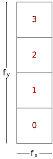
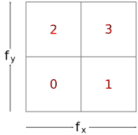
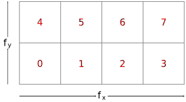

Rasterization
Rasterization is the process by which a primitive is converted to a two-dimensional image. Each discrete location of this image contains associated data such as depth, color, or other attributes.
Rasterizing a primitive begins by determining which squares of an integer grid in framebuffer coordinates are occupied by the primitive, and assigning one or more depth values to each such square. This process is described below for points, lines, and polygons.
A grid square, including its (x,y) framebuffer coordinates, z (depth), and associated data added by fragment shaders, is called a fragment. A fragment is located by its upper left corner, which lies on integer grid coordinates.
Rasterization operations also refer to a fragment’s sample locations, which are offset by fractional values from its upper left corner. The rasterization rules for points, lines, and triangles involve testing whether each sample location is inside the primitive. Fragments need not actually be square, and rasterization rules are not affected by the aspect ratio of fragments. Display of non-square grids, however, will cause rasterized points and line segments to appear fatter in one direction than the other.
We assume that fragments are square, since it simplifies antialiasing and texturing. After rasterization, fragments are processed by fragment operations.
Several factors affect rasterization, including the members of VkPipelineRasterizationStateCreateInfo and VkPipelineMultisampleStateCreateInfo.
The VkPipelineRasterizationStateCreateInfo structure is defined as:
// Provided by VK_VERSION_1_0
typedef struct VkPipelineRasterizationStateCreateInfo {
VkStructureType sType;
const void* pNext;
VkPipelineRasterizationStateCreateFlags flags;
VkBool32 depthClampEnable;
VkBool32 rasterizerDiscardEnable;
VkPolygonMode polygonMode;
VkCullModeFlags cullMode;
VkFrontFace frontFace;
VkBool32 depthBiasEnable;
float depthBiasConstantFactor;
float depthBiasClamp;
float depthBiasSlopeFactor;
float lineWidth;
} VkPipelineRasterizationStateCreateInfo;-
sTypeis a VkStructureType value identifying this structure. -
pNextisNULLor a pointer to a structure extending this structure. -
flagsis reserved for future use. -
depthClampEnablecontrols whether to clamp the fragment’s depth values as described in Depth Test. If the pipeline is not created with VkPipelineRasterizationDepthClipStateCreateInfoEXT present then enabling depth clamp will also disable clipping primitives to the z planes of the frustum as described in Primitive Clipping. Otherwise depth clipping is controlled by the state set in VkPipelineRasterizationDepthClipStateCreateInfoEXT. -
rasterizerDiscardEnablecontrols whether primitives are discarded immediately before the rasterization stage. -
polygonModeis the triangle rendering mode. See VkPolygonMode. -
cullModeis the triangle facing direction used for primitive culling. See VkCullModeFlagBits. -
frontFaceis a VkFrontFace value specifying the front-facing triangle orientation to be used for culling. -
depthBiasEnablecontrols whether to bias fragment depth values. -
depthBiasConstantFactoris a scalar factor controlling the constant depth value added to each fragment. -
depthBiasClampis the maximum (or minimum) depth bias of a fragment. -
depthBiasSlopeFactoris a scalar factor applied to a fragment’s slope in depth bias calculations. -
lineWidthis the width of rasterized line segments.
The application can also add a
VkPipelineRasterizationStateRasterizationOrderAMD structure to the
pNext chain of a VkPipelineRasterizationStateCreateInfo
structure.
This structure enables selecting the rasterization order to use when
rendering with the corresponding graphics pipeline as described in
Rasterization Order.
// Provided by VK_VERSION_1_0
typedef VkFlags VkPipelineRasterizationStateCreateFlags;VkPipelineRasterizationStateCreateFlags is a bitmask type for setting
a mask, but is currently reserved for future use.
If the pNext chain of VkPipelineRasterizationStateCreateInfo
includes a VkPipelineRasterizationDepthClipStateCreateInfoEXT
structure, then that structure controls whether depth clipping is enabled or
disabled.
The VkPipelineRasterizationDepthClipStateCreateInfoEXT structure is
defined as:
// Provided by VK_EXT_depth_clip_enable
typedef struct VkPipelineRasterizationDepthClipStateCreateInfoEXT {
VkStructureType sType;
const void* pNext;
VkPipelineRasterizationDepthClipStateCreateFlagsEXT flags;
VkBool32 depthClipEnable;
} VkPipelineRasterizationDepthClipStateCreateInfoEXT;-
sTypeis a VkStructureType value identifying this structure. -
pNextisNULLor a pointer to a structure extending this structure. -
flagsis reserved for future use. -
depthClipEnablecontrols whether depth clipping is enabled as described in Primitive Clipping.
// Provided by VK_EXT_depth_clip_enable
typedef VkFlags VkPipelineRasterizationDepthClipStateCreateFlagsEXT;VkPipelineRasterizationDepthClipStateCreateFlagsEXT is a bitmask type
for setting a mask, but is currently reserved for future use.
The VkPipelineMultisampleStateCreateInfo structure is defined as:
// Provided by VK_VERSION_1_0
typedef struct VkPipelineMultisampleStateCreateInfo {
VkStructureType sType;
const void* pNext;
VkPipelineMultisampleStateCreateFlags flags;
VkSampleCountFlagBits rasterizationSamples;
VkBool32 sampleShadingEnable;
float minSampleShading;
const VkSampleMask* pSampleMask;
VkBool32 alphaToCoverageEnable;
VkBool32 alphaToOneEnable;
} VkPipelineMultisampleStateCreateInfo;-
sTypeis a VkStructureType value identifying this structure. -
pNextisNULLor a pointer to a structure extending this structure. -
flagsis reserved for future use. -
rasterizationSamplesis a VkSampleCountFlagBits value specifying the number of samples used in rasterization. This value is ignored for the purposes of setting the number of samples used in rasterization if the pipeline is created with theVK_DYNAMIC_STATE_RASTERIZATION_SAMPLES_EXTdynamic state set, but ifVK_DYNAMIC_STATE_SAMPLE_MASK_EXTdynamic state is not set, it is still used to define the size of thepSampleMaskarray as described below. -
sampleShadingEnablecan be used to enable Sample Shading. -
minSampleShadingspecifies a minimum fraction of sample shading ifsampleShadingEnableisVK_TRUE. -
pSampleMaskis a pointer to an array ofVkSampleMaskvalues used in the sample mask test. -
alphaToCoverageEnablecontrols whether a temporary coverage value is generated based on the alpha component of the fragment’s first color output as specified in the Multisample Coverage section. -
alphaToOneEnablecontrols whether the alpha component of the fragment’s first color output is replaced with one as described in Multisample Coverage.
Each bit in the sample mask is associated with a unique
sample index as defined for the
coverage mask.
Each bit b for mask word w in the sample mask corresponds to
sample index i, where i = 32 × w + b.
pSampleMask has a length equal to ⌈
rasterizationSamples / 32 ⌉ words.
If pSampleMask is NULL, it is treated as if the mask has all bits
set to 1.
// Provided by VK_VERSION_1_0
typedef VkFlags VkPipelineMultisampleStateCreateFlags;VkPipelineMultisampleStateCreateFlags is a bitmask type for setting a
mask, but is currently reserved for future use.
The elements of the sample mask array are of type VkSampleMask,
each representing 32 bits of coverage information:
// Provided by VK_VERSION_1_0
typedef uint32_t VkSampleMask;Rasterization only generates fragments which cover one or more pixels inside the framebuffer. Pixels outside the framebuffer are never considered covered in the fragment. Fragments which would be produced by application of any of the primitive rasterization rules described below but which lie outside the framebuffer are not produced, nor are they processed by any later stage of the pipeline, including any of the fragment operations.
Surviving fragments are processed by fragment shaders. Fragment shaders determine associated data for fragments, and can also modify or replace their assigned depth values.
Discarding Primitives Before Rasterization
Primitives are discarded before rasterization if the
rasterizerDiscardEnable member of
VkPipelineRasterizationStateCreateInfo is enabled.
When enabled, primitives are discarded after they are processed by the last
active shader stage in the pipeline before rasterization.
To dynamically enable whether primitives are discarded before the rasterization stage, call:
// Provided by VK_VERSION_1_3
void vkCmdSetRasterizerDiscardEnable(
VkCommandBuffer commandBuffer,
VkBool32 rasterizerDiscardEnable);or the equivalent command
// Provided by VK_EXT_extended_dynamic_state2, VK_EXT_shader_object
void vkCmdSetRasterizerDiscardEnableEXT(
VkCommandBuffer commandBuffer,
VkBool32 rasterizerDiscardEnable);-
commandBufferis the command buffer into which the command will be recorded. -
rasterizerDiscardEnablecontrols whether primitives are discarded immediately before the rasterization stage.
This command sets the discard enable for subsequent drawing commands
when drawing using shader objects, or
when the graphics pipeline is created with
VK_DYNAMIC_STATE_RASTERIZER_DISCARD_ENABLE set in
VkPipelineDynamicStateCreateInfo::pDynamicStates.
Otherwise, this state is specified by the
VkPipelineRasterizationStateCreateInfo::rasterizerDiscardEnable
value used to create the currently active pipeline.
Controlling the Vertex Stream Used for Rasterization
By default vertex data output from the last
pre-rasterization shader stage are directed to vertex stream zero.
Geometry shaders can emit primitives to multiple independent vertex
streams.
Each vertex emitted by the geometry shader is directed at one of the vertex
streams.
As vertices are received on each vertex stream, they are arranged into
primitives of the type specified by the geometry shader output primitive
type.
The shading language instructions OpEndPrimitive and
OpEndStreamPrimitive can be used to end the primitive being assembled
on a given vertex stream and start a new empty primitive of the same type.
An implementation supports up to
VkPhysicalDeviceTransformFeedbackPropertiesEXT::maxTransformFeedbackStreams
streams, which is at least 1.
The individual streams are numbered 0 through
maxTransformFeedbackStreams minus 1.
There is no requirement on the order of the streams to which vertices are
emitted, and the number of vertices emitted to each vertex stream can be
completely independent, subject only to the
VkPhysicalDeviceTransformFeedbackPropertiesEXT::maxTransformFeedbackStreamDataSize
and
VkPhysicalDeviceTransformFeedbackPropertiesEXT::maxTransformFeedbackBufferDataSize
limits.
The primitives output from all vertex streams are passed to the transform
feedback stage to be captured to transform feedback buffers in the manner
specified by the last
pre-rasterization shader stage shader’s XfbBuffer, XfbStride, and Offsets
decorations on the output interface variables in the graphics pipeline.
To use a vertex stream other than zero, or to use multiple streams, the
GeometryStreams capability must be specified.
By default, the primitives output from vertex stream zero are rasterized.
If the implementation supports the
VkPhysicalDeviceTransformFeedbackPropertiesEXT::transformFeedbackRasterizationStreamSelect
property it is possible to rasterize a vertex stream other than zero.
By default, geometry shaders that emit vertices to multiple vertex streams
are limited to using only the OutputPoints output primitive type.
If the implementation supports the
VkPhysicalDeviceTransformFeedbackPropertiesEXT::transformFeedbackStreamsLinesTriangles
property it is possible to emit OutputLineStrip or
OutputTriangleStrip in addition to OutputPoints.
The vertex stream used for rasterization is specified by adding a
VkPipelineRasterizationStateStreamCreateInfoEXT structure to the
pNext chain of a VkPipelineRasterizationStateCreateInfo
structure.
The VkPipelineRasterizationStateStreamCreateInfoEXT structure is
defined as:
// Provided by VK_EXT_transform_feedback
typedef struct VkPipelineRasterizationStateStreamCreateInfoEXT {
VkStructureType sType;
const void* pNext;
VkPipelineRasterizationStateStreamCreateFlagsEXT flags;
uint32_t rasterizationStream;
} VkPipelineRasterizationStateStreamCreateInfoEXT;-
sTypeis a VkStructureType value identifying this structure. -
pNextisNULLor a pointer to a structure extending this structure. -
flagsis reserved for future use. -
rasterizationStreamis the vertex stream selected for rasterization.
If this structure is not present, rasterizationStream is assumed to be
zero.
// Provided by VK_EXT_transform_feedback
typedef VkFlags VkPipelineRasterizationStateStreamCreateFlagsEXT;VkPipelineRasterizationStateStreamCreateFlagsEXT is a bitmask type for
setting a mask, but is currently reserved for future use.
To dynamically set the
rasterizationStream state, call:
// Provided by VK_EXT_extended_dynamic_state3 with VK_EXT_transform_feedback, VK_EXT_shader_object with VK_EXT_transform_feedback
void vkCmdSetRasterizationStreamEXT(
VkCommandBuffer commandBuffer,
uint32_t rasterizationStream);-
commandBufferis the command buffer into which the command will be recorded. -
rasterizationStreamspecifies therasterizationStreamstate.
This command sets the rasterizationStream state for subsequent drawing
commands
when drawing using shader objects, or
when the graphics pipeline is created with
VK_DYNAMIC_STATE_RASTERIZATION_STREAM_EXT set in
VkPipelineDynamicStateCreateInfo::pDynamicStates.
Otherwise, this state is specified by the
VkPipelineRasterizationStateStreamCreateInfoEXT::rasterizationStream
value used to create the currently active pipeline.
Rasterization Order
Within a subpass of a render pass instance, for a given (x,y,layer,sample) sample location, the following operations are guaranteed to execute in rasterization order, for each separate primitive that includes that sample location:
-
Fragment operations, in the order defined
-
Blending, logic operations, and color writes
Execution of these operations for each primitive in a subpass occurs in an order determined by the application.
The rasterization order to use for a graphics pipeline is specified by
adding a VkPipelineRasterizationStateRasterizationOrderAMD structure
to the pNext chain of a VkPipelineRasterizationStateCreateInfo
structure.
The VkPipelineRasterizationStateRasterizationOrderAMD structure is
defined as:
// Provided by VK_AMD_rasterization_order
typedef struct VkPipelineRasterizationStateRasterizationOrderAMD {
VkStructureType sType;
const void* pNext;
VkRasterizationOrderAMD rasterizationOrder;
} VkPipelineRasterizationStateRasterizationOrderAMD;-
sTypeis a VkStructureType value identifying this structure. -
pNextisNULLor a pointer to a structure extending this structure. -
rasterizationOrderis a VkRasterizationOrderAMD value specifying the primitive rasterization order to use.
If the VK_AMD_rasterization_order device extension is not enabled
or the application does not request a particular rasterization order through
specifying a VkPipelineRasterizationStateRasterizationOrderAMD
structure then the rasterization order used by the graphics pipeline
defaults to VK_RASTERIZATION_ORDER_STRICT_AMD.
Possible values of
VkPipelineRasterizationStateRasterizationOrderAMD::rasterizationOrder,
specifying the primitive rasterization order, are:
// Provided by VK_AMD_rasterization_order
typedef enum VkRasterizationOrderAMD {
VK_RASTERIZATION_ORDER_STRICT_AMD = 0,
VK_RASTERIZATION_ORDER_RELAXED_AMD = 1,
} VkRasterizationOrderAMD;-
VK_RASTERIZATION_ORDER_STRICT_AMDspecifies that operations for each primitive in a subpass must occur in primitive order. -
VK_RASTERIZATION_ORDER_RELAXED_AMDspecifies that operations for each primitive in a subpass may not occur in primitive order.
Multisampling
Multisampling is a mechanism to antialias all Vulkan primitives: points, lines, and polygons. The technique is to sample all primitives multiple times at each pixel. Each sample in each framebuffer attachment has storage for a color, depth, and/or stencil value, such that per-fragment operations apply to each sample independently. The color sample values can be later resolved to a single color (see Resolving Multisample Images and the Render Pass chapter for more details on how to resolve multisample images to non-multisample images).
Vulkan defines rasterization rules for single-sample modes in a way that is equivalent to a multisample mode with a single sample in the center of each fragment.
Each fragment includes a coverage mask with a single bit for each sample in the fragment, and a number of depth values and associated data for each sample.
It is understood that each pixel has rasterizationSamples locations
associated with it.
These locations are exact positions, rather than regions or areas, and each
is referred to as a sample point.
The sample points associated with a pixel must be located inside or on the
boundary of the unit square that is considered to bound the pixel.
Furthermore, the relative locations of sample points may be identical for
each pixel in the framebuffer, or they may differ.
If the render pass has a fragment density map attachment, each fragment only
has rasterizationSamples locations associated with it regardless of
how many pixels are covered in the fragment area.
Fragment sample locations are defined as if the fragment had an area of
(1,1) and its sample points must be located within these bounds.
Their actual location in the framebuffer is calculated by scaling the sample
location by the fragment area.
Attachments with storage for multiple samples per pixel are located at the
pixel sample locations.
Otherwise, the fragment’s sample locations are generally used for evaluation
of associated data and fragment operations.
If the current pipeline includes a fragment shader with one or more
variables in its interface decorated with Sample and Input, the
data associated with those variables will be assigned independently for each
sample.
The values for each sample must be evaluated at the location of the sample.
The data associated with any other variables not decorated with Sample
and Input need not be evaluated independently for each sample.
A coverage mask is generated for each fragment, based on which samples within that fragment are determined to be within the area of the primitive that generated the fragment.
Single pixel fragments
and multi-pixel fragments defined by a
fragment density map
have one set of samples.
Multi-pixel fragments defined by a shading rate image have one set of samples per pixel.
Multi-pixel fragments defined by setting the
fragment shading rate have one set of
samples per pixel.
Each set of samples has a number of samples determined by
VkPipelineMultisampleStateCreateInfo::rasterizationSamples.
Each sample in a set is assigned a unique sample index i in the
range [0, rasterizationSamples).
To dynamically set the
rasterizationSamples, call:
// Provided by VK_EXT_extended_dynamic_state3, VK_EXT_shader_object
void vkCmdSetRasterizationSamplesEXT(
VkCommandBuffer commandBuffer,
VkSampleCountFlagBits rasterizationSamples);-
commandBufferis the command buffer into which the command will be recorded. -
rasterizationSamplesspecifiesrasterizationSamples.
This command sets the rasterizationSamples for subsequent drawing
commands
when drawing using shader objects, or
when the graphics pipeline is created with
VK_DYNAMIC_STATE_RASTERIZATION_SAMPLES_EXT set in
VkPipelineDynamicStateCreateInfo::pDynamicStates.
Otherwise, this state is specified by the
VkPipelineMultisampleStateCreateInfo::rasterizationSamples value
used to create the currently active pipeline.
Each sample in a fragment is also assigned a unique coverage index j
in the range [0, n × rasterizationSamples), where n
is the number of sets in the fragment.
If the fragment contains a single set of samples, the coverage index is
always equal to the sample index.
If a shading rate image is used and a
fragment covers multiple pixels, the coverage index is determined as defined
by VkPipelineViewportCoarseSampleOrderStateCreateInfoNV or
vkCmdSetCoarseSampleOrderNV.
If the fragment shading rate is set, the coverage index j is determined as a function of the pixel index p, the sample index i, and the number of rasterization samples r as:
-
j = i + r × ((fw × fh) - 1 - p)
where the pixel index p is determined as a function of the pixel’s framebuffer location (x,y) and the fragment size (fw,fh):
-
px = x % fw
-
py = y % fh
-
p = px + (py × fw)
The tables below illustrate the pixel index for multi-pixel fragments:
| 1x1 | 1x2 | 1x4 |
|---|---|---|
 |
| 2x1 | 2x2 | 2x4 |
|---|---|---|
 |
| 4x1 | 4x2 | 4x4 |
|---|---|---|
 |
The coverage mask includes B bits packed into W words, defined as:
-
B = n ×
rasterizationSamples -
W = ⌈B/32⌉
Bit b in coverage mask word w is 1 if the sample with coverage
index j = 32×w + b is covered, and 0 otherwise.
If the standardSampleLocations member of VkPhysicalDeviceLimits
is VK_TRUE, then the sample counts VK_SAMPLE_COUNT_1_BIT,
VK_SAMPLE_COUNT_2_BIT, VK_SAMPLE_COUNT_4_BIT,
VK_SAMPLE_COUNT_8_BIT, and VK_SAMPLE_COUNT_16_BIT have sample
locations as listed in the following table, with the ith entry in
the table corresponding to sample index i.
VK_SAMPLE_COUNT_32_BIT and VK_SAMPLE_COUNT_64_BIT do not have
standard sample locations.
Locations are defined relative to an origin in the upper left corner of the
fragment.
| Sample count | Sample Locations | |
|---|---|---|
|
(0.5,0.5) |
|
|
(0.75,0.75) |
|
|
(0.375, 0.125) |
|
|
(0.5625, 0.3125) |
|
|
(0.5625, 0.5625) |
|
Color images created with multiple samples per pixel use a compression
technique where there are two arrays of data associated with each pixel.
The first array contains one element per sample where each element stores an
index to the second array defining the fragment mask of the pixel.
The second array contains one element per color fragment and each element
stores a unique color value in the format of the image.
With this compression technique it is not always necessary to actually use
unique storage locations for each color sample: when multiple samples share
the same color value the fragment mask may have two samples referring to
the same color fragment.
The number of color fragments is determined by the samples member of
the VkImageCreateInfo structure used to create the image.
The VK_AMD_shader_fragment_mask device extension provides shader
instructions enabling the application to get direct access to the fragment
mask and the individual color fragment values.
Custom Sample Locations
Applications can also control the sample locations used for rasterization.
If the pNext chain of the VkPipelineMultisampleStateCreateInfo
structure specified at pipeline creation time includes a
VkPipelineSampleLocationsStateCreateInfoEXT structure, then that
structure controls the sample locations used when rasterizing primitives
with the pipeline.
The VkPipelineSampleLocationsStateCreateInfoEXT structure is defined
as:
// Provided by VK_EXT_sample_locations
typedef struct VkPipelineSampleLocationsStateCreateInfoEXT {
VkStructureType sType;
const void* pNext;
VkBool32 sampleLocationsEnable;
VkSampleLocationsInfoEXT sampleLocationsInfo;
} VkPipelineSampleLocationsStateCreateInfoEXT;-
sTypeis a VkStructureType value identifying this structure. -
pNextisNULLor a pointer to a structure extending this structure. -
sampleLocationsEnablecontrols whether custom sample locations are used. IfsampleLocationsEnableisVK_FALSE, the default sample locations are used and the values specified insampleLocationsInfoare ignored. -
sampleLocationsInfois the sample locations to use during rasterization ifsampleLocationsEnableisVK_TRUEand the graphics pipeline is not created withVK_DYNAMIC_STATE_SAMPLE_LOCATIONS_EXT.
The VkSampleLocationsInfoEXT structure is defined as:
// Provided by VK_EXT_sample_locations
typedef struct VkSampleLocationsInfoEXT {
VkStructureType sType;
const void* pNext;
VkSampleCountFlagBits sampleLocationsPerPixel;
VkExtent2D sampleLocationGridSize;
uint32_t sampleLocationsCount;
const VkSampleLocationEXT* pSampleLocations;
} VkSampleLocationsInfoEXT;-
sTypeis a VkStructureType value identifying this structure. -
pNextisNULLor a pointer to a structure extending this structure. -
sampleLocationsPerPixelis a VkSampleCountFlagBits value specifying the number of sample locations per pixel. -
sampleLocationGridSizeis the size of the sample location grid to select custom sample locations for. -
sampleLocationsCountis the number of sample locations inpSampleLocations. -
pSampleLocationsis a pointer to an array ofsampleLocationsCountVkSampleLocationEXT structures.
This structure can be used either to specify the sample locations to be
used for rendering or to specify the set of sample locations an image
subresource has been last rendered with for the purposes of layout
transitions of depth/stencil images created with
VK_IMAGE_CREATE_SAMPLE_LOCATIONS_COMPATIBLE_DEPTH_BIT_EXT.
The sample locations in pSampleLocations specify
sampleLocationsPerPixel number of sample locations for each pixel in
the grid of the size specified in sampleLocationGridSize.
The sample location for sample i at the pixel grid location
(x,y) is taken from pSampleLocations[(x + y ×
sampleLocationGridSize.width) × sampleLocationsPerPixel
+ i].
If the render pass has a fragment density map, the implementation will
choose the sample locations for the fragment and the contents of
pSampleLocations may be ignored.
The VkSampleLocationEXT structure is defined as:
// Provided by VK_EXT_sample_locations
typedef struct VkSampleLocationEXT {
float x;
float y;
} VkSampleLocationEXT;-
xis the horizontal coordinate of the sample’s location. -
yis the vertical coordinate of the sample’s location.
The domain space of the sample location coordinates has an upper-left origin within the pixel in framebuffer space.
The values specified in a VkSampleLocationEXT structure are always
clamped to the implementation-dependent sample location coordinate range
[sampleLocationCoordinateRange[0],sampleLocationCoordinateRange[1]]
that can be queried using
VkPhysicalDeviceSampleLocationsPropertiesEXT.
To dynamically set the
sampleLocationsEnable state, call:
// Provided by VK_EXT_extended_dynamic_state3 with VK_EXT_sample_locations, VK_EXT_sample_locations with VK_EXT_shader_object
void vkCmdSetSampleLocationsEnableEXT(
VkCommandBuffer commandBuffer,
VkBool32 sampleLocationsEnable);-
commandBufferis the command buffer into which the command will be recorded. -
sampleLocationsEnablespecifies thesampleLocationsEnablestate.
This command sets the sampleLocationsEnable state for subsequent
drawing commands
when drawing using shader objects, or
when the graphics pipeline is created with
VK_DYNAMIC_STATE_SAMPLE_LOCATIONS_ENABLE_EXT set in
VkPipelineDynamicStateCreateInfo::pDynamicStates.
Otherwise, this state is specified by the
VkPipelineSampleLocationsStateCreateInfoEXT::sampleLocationsEnable
value used to create the currently active pipeline.
To dynamically set the sample locations used for rasterization, call:
// Provided by VK_EXT_sample_locations
void vkCmdSetSampleLocationsEXT(
VkCommandBuffer commandBuffer,
const VkSampleLocationsInfoEXT* pSampleLocationsInfo);-
commandBufferis the command buffer into which the command will be recorded. -
pSampleLocationsInfois the sample locations state to set.
This command sets the custom sample locations for subsequent drawing
commands
when drawing using shader objects, or
when the graphics pipeline is created with
VK_DYNAMIC_STATE_SAMPLE_LOCATIONS_EXT set in
VkPipelineDynamicStateCreateInfo::pDynamicStates, and when the
VkPipelineSampleLocationsStateCreateInfoEXT::sampleLocationsEnable
property of the bound graphics pipeline is VK_TRUE.
Otherwise, this state is specified by the
VkPipelineSampleLocationsStateCreateInfoEXT::sampleLocationsInfo
values used to create the currently active pipeline.
Fragment Shading Rates
The features advertised by VkPhysicalDeviceFragmentShadingRateFeaturesKHR allow an application to control the shading rate of a given fragment shader invocation.
The fragment shading rate strongly interacts with Multisampling, and the set of available rates for an implementation may be restricted by sample rate.
To query available shading rates, call:
// Provided by VK_KHR_fragment_shading_rate
VkResult vkGetPhysicalDeviceFragmentShadingRatesKHR(
VkPhysicalDevice physicalDevice,
uint32_t* pFragmentShadingRateCount,
VkPhysicalDeviceFragmentShadingRateKHR* pFragmentShadingRates);-
physicalDeviceis the handle to the physical device whose properties will be queried. -
pFragmentShadingRateCountis a pointer to an integer related to the number of fragment shading rates available or queried, as described below. -
pFragmentShadingRatesis eitherNULLor a pointer to an array of VkPhysicalDeviceFragmentShadingRateKHR structures.
If pFragmentShadingRates is NULL, then the number of fragment
shading rates available is returned in pFragmentShadingRateCount.
Otherwise, pFragmentShadingRateCount must point to a variable set by
the application to the number of elements in the pFragmentShadingRates
array, and on return the variable is overwritten with the number of
structures actually written to pFragmentShadingRates.
If pFragmentShadingRateCount is less than the number of fragment
shading rates available, at most pFragmentShadingRateCount structures
will be written, and VK_INCOMPLETE will be returned instead of
VK_SUCCESS, to indicate that not all the available fragment shading
rates were returned.
The returned array of fragment shading rates must be ordered from largest
fragmentSize.width value to smallest, and each set of fragment shading
rates with the same fragmentSize.width value must be ordered from
largest fragmentSize.height to smallest.
Any two entries in the array must not have the same fragmentSize
values.
For any entry in the array, the following rules also apply:
-
The value of
fragmentSize.widthmust be less than or equal tomaxFragmentSize.width. -
The value of
fragmentSize.widthmust be greater than or equal to1. -
The value of
fragmentSize.widthmust be a power-of-two. -
The value of
fragmentSize.heightmust be less than or equal tomaxFragmentSize.height. -
The value of
fragmentSize.heightmust be greater than or equal to1. -
The value of
fragmentSize.heightmust be a power-of-two. -
The highest sample count in
sampleCountsmust be less than or equal tomaxFragmentShadingRateRasterizationSamples. -
The product of
fragmentSize.width,fragmentSize.height, and the highest sample count insampleCountsmust be less than or equal tomaxFragmentShadingRateCoverageSamples.
Implementations must support at least the following shading rates:
sampleCounts |
fragmentSize |
|---|---|
|
{2,2} |
|
{2,1} |
~0 |
{1,1} |
If framebufferColorSampleCounts, includes VK_SAMPLE_COUNT_2_BIT,
the required rates must also include VK_SAMPLE_COUNT_2_BIT.
|
Including the {1,1} fragment size is done for completeness; it has no actual effect on the support of rendering without setting the fragment size. All sample counts and render pass transforms are supported for this rate. |
The returned set of fragment shading rates must be returned in the native
(rotated) coordinate system.
For rasterization using render pass transform not equal to
VK_SURFACE_TRANSFORM_IDENTITY_BIT_KHR, the application must transform
the returned fragment shading rates into the current (unrotated) coordinate
system to get the supported rates for that transform.
|
For example, consider an implementation returning support for 4x2, but not
2x4 in the set of supported fragment shading rates.
This means that for transforms |
The VkPhysicalDeviceFragmentShadingRateKHR structure is defined as
// Provided by VK_KHR_fragment_shading_rate
typedef struct VkPhysicalDeviceFragmentShadingRateKHR {
VkStructureType sType;
void* pNext;
VkSampleCountFlags sampleCounts;
VkExtent2D fragmentSize;
} VkPhysicalDeviceFragmentShadingRateKHR;-
sTypeis a VkStructureType value identifying this structure. -
pNextisNULLor a pointer to a structure extending this structure. -
sampleCountsis a bitmask of sample counts for which the shading rate described byfragmentSizeis supported. -
fragmentSizeis a VkExtent2D describing the width and height of a supported shading rate.
Fragment shading rates can be set at three points, with the three rates combined to determine the final shading rate.
Pipeline Fragment Shading Rate
The pipeline fragment shading rate can be set on a per-draw basis by either setting the rate in a graphics pipeline, or dynamically via vkCmdSetFragmentShadingRateKHR.
The VkPipelineFragmentShadingRateStateCreateInfoKHR structure is
defined as:
// Provided by VK_KHR_fragment_shading_rate
typedef struct VkPipelineFragmentShadingRateStateCreateInfoKHR {
VkStructureType sType;
const void* pNext;
VkExtent2D fragmentSize;
VkFragmentShadingRateCombinerOpKHR combinerOps[2];
} VkPipelineFragmentShadingRateStateCreateInfoKHR;-
sTypeis a VkStructureType value identifying this structure. -
pNextisNULLor a pointer to a structure extending this structure. -
fragmentSizespecifies a VkExtent2D structure containing the fragment size used to define the pipeline fragment shading rate for drawing commands using this pipeline. -
combinerOpsspecifies a VkFragmentShadingRateCombinerOpKHR value determining how the pipeline, primitive, and attachment shading rates are combined for fragments generated by drawing commands using the created pipeline.
If the pNext chain of VkGraphicsPipelineCreateInfo includes a
VkPipelineFragmentShadingRateStateCreateInfoKHR structure, then that
structure includes parameters controlling the pipeline fragment shading
rate.
If this structure is not present, fragmentSize is considered to be
equal to (1,1), and both elements of combinerOps are considered
to be equal to VK_FRAGMENT_SHADING_RATE_COMBINER_OP_KEEP_KHR.
To dynamically set the pipeline fragment shading rate and combiner operation, call:
// Provided by VK_KHR_fragment_shading_rate
void vkCmdSetFragmentShadingRateKHR(
VkCommandBuffer commandBuffer,
const VkExtent2D* pFragmentSize,
const VkFragmentShadingRateCombinerOpKHR combinerOps[2]);-
commandBufferis the command buffer into which the command will be recorded. -
pFragmentSizespecifies the pipeline fragment shading rate for subsequent drawing commands. -
combinerOpsspecifies a VkFragmentShadingRateCombinerOpKHR determining how the pipeline, primitive, and attachment shading rates are combined for fragments generated by subsequent drawing commands.
This command sets the pipeline fragment shading rate and combiner operation
for subsequent drawing commands
when drawing using shader objects, or
when the graphics pipeline is created with
VK_DYNAMIC_STATE_FRAGMENT_SHADING_RATE_KHR set in
VkPipelineDynamicStateCreateInfo::pDynamicStates.
Otherwise, this state is specified by the
VkPipelineFragmentShadingRateStateCreateInfoKHR values used to create
the currently active pipeline.
Primitive Fragment Shading Rate
The primitive fragment shading rate can be set via the
PrimitiveShadingRateKHR built-in in the last active
pre-rasterization shader stage.
If the last pre-rasterization shader stage is using the MeshEXT Execution Model, the rate
associated with a given primitive is sourced from the value written to the
per-primitive PrimitiveShadingRateKHR.
Otherwise the
rate associated with a given primitive is sourced from the value written to
PrimitiveShadingRateKHR by that primitive’s
provoking vertex.
Attachment Fragment Shading Rate
The attachment shading rate can be set by including VkFragmentShadingRateAttachmentInfoKHR in a subpass to define a fragment shading rate attachment. Each pixel in the framebuffer is assigned an attachment fragment shading rate by the corresponding texel in the fragment shading rate attachment, according to:
-
x' = floor(x / regionx)
-
y' = floor(y / regiony)
where x' and y' are the coordinates of a texel in the fragment
shading rate attachment, x and y are the coordinates of the
pixel in the framebuffer, and regionx and regiony are the
size of the region each texel corresponds to, as defined by the
shadingRateAttachmentTexelSize member of
VkFragmentShadingRateAttachmentInfoKHR.
If multiview is enabled and the shading
rate attachment has multiple layers, the shading rate attachment texel is
selected using layer =
ViewIndex.
If multiview is disabled, and both the
shading rate attachment and the framebuffer have multiple layers, the
shading rate attachment texel is selected using layer =
Layer.
Otherwise, layer = 0.
The texel is read from the fragment shading rate attachment image as a texture input operation without a sampler, using integer coordinates i = x', j = y', k = 0, l = layer, and s = 0. The fragment size is encoded into the first component of the result of that operation as follows:
-
sizew = 2((texel/4)&3)
-
sizeh = 2(texel&3)
where texel is the value in the first component of the returned value, and sizew and sizeh are the width and height of the fragment size, decoded from the texel.
If no fragment shading rate attachment is specified, this size is calculated as sizew = sizeh = 1. Applications must not specify a width or height greater than 4 by this method.
The Fragment Shading Rate enumeration in SPIR-V adheres to the above encoding.
Combining the Fragment Shading Rates
The final rate (Cxy') used for fragment shading must be one of the rates returned by vkGetPhysicalDeviceFragmentShadingRatesKHR for the sample count and render pass transform used by rasterization.
If any of the following conditions are met, Cxy' is set to {1,1} by the implementation:
-
If Sample Shading is enabled.
-
The
fragmentShadingRateWithSampleMasklimit is not supported, and VkPipelineMultisampleStateCreateInfo::pSampleMaskcontains a zero value in any bit used by fragment operations. -
The
fragmentShadingRateWithShaderSampleMaskis not supported, and the fragment shader hasSampleMaskin the input or output interface. -
The
fragmentShadingRateWithShaderDepthStencilWriteslimit is not supported, and the fragment shader declares theFragDepthorFragStencilRefEXTbuilt-in. -
The
fragmentShadingRateWithConservativeRasterizationlimit is not supported, and VkPipelineRasterizationConservativeStateCreateInfoEXT::conservativeRasterizationModeis notVK_CONSERVATIVE_RASTERIZATION_MODE_DISABLED_EXT. -
The
fragmentShadingRateWithFragmentShaderInterlocklimit is not supported, and the fragment shader declares any of the fragment shader interlock execution modes. -
The
fragmentShadingRateWithCustomSampleLocationslimit is not supported, and VkPipelineSampleLocationsStateCreateInfoEXT::sampleLocationsEnableisVK_TRUE. -
The fragment shader declares any of the
TileImageColorReadAccessEXT,TileImageDepthReadAccessEXT, orTileImageStencilReadAccessEXTcapabilities.
Otherwise, each of the specified shading rates are combined and then used to derive the value of Cxy'. As there are three ways to specify shading rates, two combiner operations are specified - between the pipeline and primitive shading rates, and between the result of that and the attachment shading rate.
The equation used for each combiner operation is defined by
VkFragmentShadingRateCombinerOpKHR:
// Provided by VK_KHR_fragment_shading_rate
typedef enum VkFragmentShadingRateCombinerOpKHR {
VK_FRAGMENT_SHADING_RATE_COMBINER_OP_KEEP_KHR = 0,
VK_FRAGMENT_SHADING_RATE_COMBINER_OP_REPLACE_KHR = 1,
VK_FRAGMENT_SHADING_RATE_COMBINER_OP_MIN_KHR = 2,
VK_FRAGMENT_SHADING_RATE_COMBINER_OP_MAX_KHR = 3,
VK_FRAGMENT_SHADING_RATE_COMBINER_OP_MUL_KHR = 4,
} VkFragmentShadingRateCombinerOpKHR;-
VK_FRAGMENT_SHADING_RATE_COMBINER_OP_KEEP_KHRspecifies a combiner operation of combine(Axy,Bxy) = Axy. -
VK_FRAGMENT_SHADING_RATE_COMBINER_OP_REPLACE_KHRspecifies a combiner operation of combine(Axy,Bxy) = Bxy. -
VK_FRAGMENT_SHADING_RATE_COMBINER_OP_MIN_KHRspecifies a combiner operation of combine(Axy,Bxy) = min(Axy,Bxy). -
VK_FRAGMENT_SHADING_RATE_COMBINER_OP_MAX_KHRspecifies a combiner operation of combine(Axy,Bxy) = max(Axy,Bxy). -
VK_FRAGMENT_SHADING_RATE_COMBINER_OP_MUL_KHRspecifies a combiner operation of combine(Axy,Bxy) = Axy*Bxy.
where combine(Axy,Bxy) is the combine operation, and Axy and Bxy are the inputs to the operation.
If fragmentShadingRateStrictMultiplyCombiner is VK_FALSE, using
VK_FRAGMENT_SHADING_RATE_COMBINER_OP_MUL_KHR with values of 1 for both
A and B in the same dimension results in the value 2 being produced for that
dimension.
See the definition of fragmentShadingRateStrictMultiplyCombiner for more information.
These operations are performed in a component-wise fashion.
This is used to generate a combined fragment area using the equation:
-
Cxy = combine(Axy,Bxy)
where Cxy is the combined fragment area result, and Axy and Bxy are the fragment areas of the fragment shading rates being combined.
Two combine operations are performed, first with Axy equal to the
pipeline fragment shading rate
and Bxy equal to the primitive fragment shading rate, with the combine() operation
selected by combinerOps[0].
A second combination is then performed, with Axy equal to the result
of the first combination and Bxy equal to the
attachment fragment shading rate, with the combine() operation selected by combinerOps[1].
The result of the second combination is used as the final fragment shading
rate, reported via the ShadingRateKHR built-in.
Implementations should clamp the inputs to the combiner operations
Axy and Bxy, and must
do so if
VkPhysicalDeviceMaintenance6PropertiesKHR::fragmentShadingRateClampCombinerInputs
is VK_TRUE.
All implementations must
clamp the result of the second combiner operation.
A fragment shading rate Rxy representing any of Axy, Bxy or Cxy is clamped as follows. If Rxy is one of the rates returned by vkGetPhysicalDeviceFragmentShadingRatesKHR for the sample count and render pass transform used by rasterization, the clamped shading rate Rxy' is Rxy. Otherwise, the clamped shading rate is selected from the rates returned by vkGetPhysicalDeviceFragmentShadingRatesKHR for the sample count and render pass transform used by rasterization. From this list of supported rates, the following steps are applied in order, to select a single value:
-
Keep only rates where Rx' ≤ Rx and Ry' ≤ Ry.
-
Implementations may also keep rates where Rx' ≤ Ry and Ry' ≤ Rx.
-
-
Keep only rates with the highest area (Rx' × Ry').
-
Keep only rates with the lowest aspect ratio (Rx' + Ry').
-
In cases where a wide (e.g. 4x1) and tall (e.g. 1x4) rate remain, the implementation may choose either rate. However, it must choose this rate consistently for the same shading rates, render pass transform, and combiner operations for the lifetime of the VkDevice.
Extended Fragment Shading Rates
The features advertised by VkPhysicalDeviceFragmentShadingRateEnumsFeaturesNV provide support for additional fragment shading rates beyond those specifying one fragment shader invocation covering all pixels in a fragment whose size is indicated by the fragment shading rate.
If the fragmentShadingRateEnums feature is enabled, fragment shading
rates may be specified using the VkFragmentShadingRateNV enumerated
type defined as:
// Provided by VK_NV_fragment_shading_rate_enums
typedef enum VkFragmentShadingRateNV {
VK_FRAGMENT_SHADING_RATE_1_INVOCATION_PER_PIXEL_NV = 0,
VK_FRAGMENT_SHADING_RATE_1_INVOCATION_PER_1X2_PIXELS_NV = 1,
VK_FRAGMENT_SHADING_RATE_1_INVOCATION_PER_2X1_PIXELS_NV = 4,
VK_FRAGMENT_SHADING_RATE_1_INVOCATION_PER_2X2_PIXELS_NV = 5,
VK_FRAGMENT_SHADING_RATE_1_INVOCATION_PER_2X4_PIXELS_NV = 6,
VK_FRAGMENT_SHADING_RATE_1_INVOCATION_PER_4X2_PIXELS_NV = 9,
VK_FRAGMENT_SHADING_RATE_1_INVOCATION_PER_4X4_PIXELS_NV = 10,
VK_FRAGMENT_SHADING_RATE_2_INVOCATIONS_PER_PIXEL_NV = 11,
VK_FRAGMENT_SHADING_RATE_4_INVOCATIONS_PER_PIXEL_NV = 12,
VK_FRAGMENT_SHADING_RATE_8_INVOCATIONS_PER_PIXEL_NV = 13,
VK_FRAGMENT_SHADING_RATE_16_INVOCATIONS_PER_PIXEL_NV = 14,
VK_FRAGMENT_SHADING_RATE_NO_INVOCATIONS_NV = 15,
} VkFragmentShadingRateNV;-
VK_FRAGMENT_SHADING_RATE_1_INVOCATION_PER_PIXEL_NVspecifies a fragment size of 1x1 pixels. -
VK_FRAGMENT_SHADING_RATE_1_INVOCATION_PER_1X2_PIXELS_NVspecifies a fragment size of 1x2 pixels. -
VK_FRAGMENT_SHADING_RATE_1_INVOCATION_PER_2X1_PIXELS_NVspecifies a fragment size of 2x1 pixels. -
VK_FRAGMENT_SHADING_RATE_1_INVOCATION_PER_2X2_PIXELS_NVspecifies a fragment size of 2x2 pixels. -
VK_FRAGMENT_SHADING_RATE_1_INVOCATION_PER_2X4_PIXELS_NVspecifies a fragment size of 2x4 pixels. -
VK_FRAGMENT_SHADING_RATE_1_INVOCATION_PER_4X2_PIXELS_NVspecifies a fragment size of 4x2 pixels. -
VK_FRAGMENT_SHADING_RATE_1_INVOCATION_PER_4X4_PIXELS_NVspecifies a fragment size of 4x4 pixels. -
VK_FRAGMENT_SHADING_RATE_2_INVOCATIONS_PER_PIXEL_NVspecifies a fragment size of 1x1 pixels, with two fragment shader invocations per fragment. -
VK_FRAGMENT_SHADING_RATE_4_INVOCATIONS_PER_PIXEL_NVspecifies a fragment size of 1x1 pixels, with four fragment shader invocations per fragment. -
VK_FRAGMENT_SHADING_RATE_8_INVOCATIONS_PER_PIXEL_NVspecifies a fragment size of 1x1 pixels, with eight fragment shader invocations per fragment. -
VK_FRAGMENT_SHADING_RATE_16_INVOCATIONS_PER_PIXEL_NVspecifies a fragment size of 1x1 pixels, with sixteen fragment shader invocations per fragment. -
VK_FRAGMENT_SHADING_RATE_NO_INVOCATIONS_NVspecifies that any portions of a primitive that use that shading rate should be discarded without invoking any fragment shader.
To use the shading rates
VK_FRAGMENT_SHADING_RATE_2_INVOCATIONS_PER_PIXEL_NV,
VK_FRAGMENT_SHADING_RATE_4_INVOCATIONS_PER_PIXEL_NV,
VK_FRAGMENT_SHADING_RATE_8_INVOCATIONS_PER_PIXEL_NV, and
VK_FRAGMENT_SHADING_RATE_16_INVOCATIONS_PER_PIXEL_NV as a pipeline,
primitive, or attachment shading rate, the
supersampleFragmentShadingRates feature must be enabled.
To use the shading rate VK_FRAGMENT_SHADING_RATE_NO_INVOCATIONS_NV as
a pipeline, primitive, or attachment shading rate, the
noInvocationFragmentShadingRates feature must be enabled.
When using fragment shading rate enums, the pipeline fragment shading rate can be set on a per-draw basis by either setting the rate in a graphics pipeline, or dynamically via vkCmdSetFragmentShadingRateEnumNV.
The VkPipelineFragmentShadingRateEnumStateCreateInfoNV structure is
defined as:
// Provided by VK_NV_fragment_shading_rate_enums
typedef struct VkPipelineFragmentShadingRateEnumStateCreateInfoNV {
VkStructureType sType;
const void* pNext;
VkFragmentShadingRateTypeNV shadingRateType;
VkFragmentShadingRateNV shadingRate;
VkFragmentShadingRateCombinerOpKHR combinerOps[2];
} VkPipelineFragmentShadingRateEnumStateCreateInfoNV;-
sTypeis a VkStructureType value identifying this structure. -
pNextisNULLor a pointer to a structure extending this structure. -
shadingRateTypespecifies a VkFragmentShadingRateTypeNV value indicating whether fragment shading rates are specified using fragment sizes or VkFragmentShadingRateNV enums. -
shadingRatespecifies a VkFragmentShadingRateNV value indicating the pipeline fragment shading rate. -
combinerOpsspecifies VkFragmentShadingRateCombinerOpKHR values determining how the pipeline, primitive, and attachment shading rates are combined for fragments generated by drawing commands using the created pipeline.
If the pNext chain of VkGraphicsPipelineCreateInfo includes a
VkPipelineFragmentShadingRateEnumStateCreateInfoNV structure, then
that structure includes parameters controlling the pipeline fragment shading
rate.
If this structure is not present, shadingRateType is considered to be
equal to VK_FRAGMENT_SHADING_RATE_TYPE_FRAGMENT_SIZE_NV,
shadingRate is considered to be equal to
VK_FRAGMENT_SHADING_RATE_1_INVOCATION_PER_PIXEL_NV, and both elements
of combinerOps are considered to be equal to
VK_FRAGMENT_SHADING_RATE_COMBINER_OP_KEEP_KHR.
The VkFragmentShadingRateTypeNV enumerated type specifies whether a graphics pipeline gets its pipeline fragment shading rates and combiners from the VkPipelineFragmentShadingRateEnumStateCreateInfoNV structure or the VkPipelineFragmentShadingRateStateCreateInfoKHR structure.
// Provided by VK_NV_fragment_shading_rate_enums
typedef enum VkFragmentShadingRateTypeNV {
VK_FRAGMENT_SHADING_RATE_TYPE_FRAGMENT_SIZE_NV = 0,
VK_FRAGMENT_SHADING_RATE_TYPE_ENUMS_NV = 1,
} VkFragmentShadingRateTypeNV;-
VK_FRAGMENT_SHADING_RATE_TYPE_FRAGMENT_SIZE_NVspecifies that a graphics pipeline should obtain its pipeline fragment shading rate and shading rate combiner state from the VkPipelineFragmentShadingRateStateCreateInfoKHR structure and that any state specified by the VkPipelineFragmentShadingRateEnumStateCreateInfoNV structure should be ignored. -
VK_FRAGMENT_SHADING_RATE_TYPE_ENUMS_NVspecifies that a graphics pipeline should obtain its pipeline fragment shading rate and shading rate combiner state from the VkPipelineFragmentShadingRateEnumStateCreateInfoNV structure and that any state specified by the VkPipelineFragmentShadingRateStateCreateInfoKHR structure should be ignored.
To dynamically set the pipeline fragment shading rate and combiner operation, call:
// Provided by VK_NV_fragment_shading_rate_enums
void vkCmdSetFragmentShadingRateEnumNV(
VkCommandBuffer commandBuffer,
VkFragmentShadingRateNV shadingRate,
const VkFragmentShadingRateCombinerOpKHR combinerOps[2]);-
commandBufferis the command buffer into which the command will be recorded. -
shadingRatespecifies a VkFragmentShadingRateNV enum indicating the pipeline fragment shading rate for subsequent drawing commands. -
combinerOpsspecifies a VkFragmentShadingRateCombinerOpKHR determining how the pipeline, primitive, and attachment shading rates are combined for fragments generated by subsequent drawing commands.
This command sets the pipeline fragment shading rate and combiner operation
for subsequent drawing commands
when drawing using shader objects, or
when the graphics pipeline is created with
VK_DYNAMIC_STATE_FRAGMENT_SHADING_RATE_KHR set in
VkPipelineDynamicStateCreateInfo::pDynamicStates.
Otherwise, this state is specified by the
VkPipelineFragmentShadingRateEnumStateCreateInfoNV values used to
create the currently active pipeline.
|
This command allows specifying additional shading rates beyond those
supported by vkCmdSetFragmentShadingRateKHR.
For more information, refer to the
|
When the supersampleFragmentShadingRates or
noInvocationFragmentShadingRates features are enabled, the behavior
of the shading rate combiner operations is extended to support the shading rates enabled by those
features.
Primitive and attachment shading rate values are interpreted as
VkFragmentShadingRateNV values and the behavior of the combiners is
modified as follows:
-
For
VK_FRAGMENT_SHADING_RATE_COMBINER_OP_MIN_KHR,VK_FRAGMENT_SHADING_RATE_COMBINER_OP_MAX_KHR, andVK_FRAGMENT_SHADING_RATE_COMBINER_OP_MUL_KHR, if either Axy or Bxy isVK_FRAGMENT_SHADING_RATE_NO_INVOCATIONS_NV, combine(Axy,Bxy) produces a shading rate ofVK_FRAGMENT_SHADING_RATE_NO_INVOCATIONS_NV, regardless of the other input shading rate. -
For
VK_FRAGMENT_SHADING_RATE_COMBINER_OP_MIN_KHR, combine(Axy,Bxy) produces a shading rate whose fragment size is the smaller of the fragment sizes of Axy and Bxy and whose invocation count is the larger of the invocation counts of Axy and Bxy. -
For
VK_FRAGMENT_SHADING_RATE_COMBINER_OP_MAX_KHR, combine(Axy,Bxy) produces a shading rate whose fragment size is the larger of the fragment sizes of Axy and Bxy and whose invocation count is the smaller of the invocation counts of Axy and Bxy. -
For
VK_FRAGMENT_SHADING_RATE_COMBINER_OP_MUL_KHR, combine(Axy,Bxy) produces a shading rate whose fragment size and invocation count is the product of the fragment sizes and invocation counts, respectively, of Axy and Bxy. If the resulting shading rate has both multiple pixels and multiple invocations per fragment, an implementation may adjust the shading rate by reducing both the pixel and invocation counts.
If the final shading rate from the combiners is
VK_FRAGMENT_SHADING_RATE_NO_INVOCATIONS_NV, no fragments will be
generated for any portion of a primitive using that shading rate.
If the final shading rate from the combiners specifies multiple fragment
shader invocations per fragment, the fragment will be processed with
multiple unique samples as in sample shading,
where the total number the total number of invocations is taken from the
shading rate and then clamped to rasterizationSamples and
maxFragmentShadingRateInvocationCount.
Shading Rate Image
The shadingRateImage feature allows
pipelines to use a shading rate image to
control the fragment area and the minimum number
of fragment shader invocations launched for each fragment.
When the shading rate image is enabled, the rasterizer determines a base
shading rate for each region of the framebuffer
covered by a primitive by fetching a value from the shading rate image and
translating it to a shading rate using a per-viewport shading rate palette.
This base shading rate is then adjusted to derive a final shading rate.
The final shading rate specifies the fragment area and fragment shader
invocation count to use for fragments generated in the region.
If the pNext chain of VkPipelineViewportStateCreateInfo includes
a VkPipelineViewportShadingRateImageStateCreateInfoNV structure, then
that structure includes parameters controlling the shading rate.
The VkPipelineViewportShadingRateImageStateCreateInfoNV structure is
defined as:
// Provided by VK_NV_shading_rate_image
typedef struct VkPipelineViewportShadingRateImageStateCreateInfoNV {
VkStructureType sType;
const void* pNext;
VkBool32 shadingRateImageEnable;
uint32_t viewportCount;
const VkShadingRatePaletteNV* pShadingRatePalettes;
} VkPipelineViewportShadingRateImageStateCreateInfoNV;-
sTypeis a VkStructureType value identifying this structure. -
pNextisNULLor a pointer to a structure extending this structure. -
shadingRateImageEnablespecifies whether shading rate image and palettes are used during rasterization. -
viewportCountspecifies the number of per-viewport palettes used to translate values stored in shading rate images. -
pShadingRatePalettesis a pointer to an array of VkShadingRatePaletteNV structures defining the palette for each viewport. If the shading rate palette state is dynamic, this member is ignored.
If this structure is not present, shadingRateImageEnable is considered
to be VK_FALSE, and the shading rate image and palettes are not used.
When shading rate image usage is enabled in the bound pipeline, the pipeline uses a shading rate image specified by the command:
// Provided by VK_NV_shading_rate_image
void vkCmdBindShadingRateImageNV(
VkCommandBuffer commandBuffer,
VkImageView imageView,
VkImageLayout imageLayout);-
commandBufferis the command buffer into which the command will be recorded. -
imageViewis an image view handle specifying the shading rate image.imageViewmay be VK_NULL_HANDLE, which is equivalent to specifying a view of an image filled with zero values. -
imageLayoutis the layout that the image subresources accessible fromimageViewwill be in when the shading rate image is accessed.
When the shading rate image is enabled in the current pipeline, rasterizing
a primitive covering the pixel with coordinates (x,y) will fetch a
shading rate index value from the shading rate image bound by
vkCmdBindShadingRateImageNV.
If the shading rate image view has a type of VK_IMAGE_VIEW_TYPE_2D,
the lookup will use texel coordinates (u,v) where \(u =
\left\lfloor \frac{x}{twidth} \right\rfloor\), \(v = \left\lfloor
\frac{y}{theight} \right\rfloor\), and and
are the width and height of the implementation-dependent
shading rate texel size.
If the shading rate image view has a type of
VK_IMAGE_VIEW_TYPE_2D_ARRAY, the lookup will use texel coordinates
(u,v) to extract a texel from the layer l, where l is the layer of
the framebuffer being rendered to.
If l is greater than or equal to the number of layers in the image view,
layer zero will be used.
If the bound shading rate image view is not VK_NULL_HANDLE and
contains a texel with coordinates (u,v) in layer l (if applicable),
the single unsigned integer component for that texel will be used as the
shading rate index.
If the (u,v) coordinate is outside the extents of the subresource used
by the shading rate image view, or if the image view is
VK_NULL_HANDLE, the shading rate index is zero.
If the shading rate image view has multiple mipmap levels, the base level
identified by VkImageSubresourceRange::baseMipLevel will be
used.
A shading rate index is mapped to a base shading rate using a lookup table called the shading rate image palette. There is a separate palette for each viewport. The number of entries in each palette is given by the implementation-dependent shading rate image palette size.
To dynamically set the
shadingRateImageEnable state, call:
// Provided by VK_EXT_extended_dynamic_state3 with VK_NV_shading_rate_image, VK_EXT_shader_object with VK_NV_shading_rate_image
void vkCmdSetShadingRateImageEnableNV(
VkCommandBuffer commandBuffer,
VkBool32 shadingRateImageEnable);-
commandBufferis the command buffer into which the command will be recorded. -
shadingRateImageEnablespecifies theshadingRateImageEnablestate.
This command sets the shadingRateImageEnable state for subsequent
drawing commands
when drawing using shader objects, or
when the graphics pipeline is created with
VK_DYNAMIC_STATE_SHADING_RATE_IMAGE_ENABLE_NV set in
VkPipelineDynamicStateCreateInfo::pDynamicStates.
Otherwise, this state is specified by the
VkPipelineViewportShadingRateImageStateCreateInfoNV::shadingRateImageEnable
value used to create the currently active pipeline.
To dynamically set the per-viewport shading rate image palettes, call:
// Provided by VK_NV_shading_rate_image
void vkCmdSetViewportShadingRatePaletteNV(
VkCommandBuffer commandBuffer,
uint32_t firstViewport,
uint32_t viewportCount,
const VkShadingRatePaletteNV* pShadingRatePalettes);-
commandBufferis the command buffer into which the command will be recorded. -
firstViewportis the index of the first viewport whose shading rate palette is updated by the command. -
viewportCountis the number of viewports whose shading rate palettes are updated by the command. -
pShadingRatePalettesis a pointer to an array of VkShadingRatePaletteNV structures defining the palette for each viewport.
This command sets the per-viewport shading rate image palettes for
subsequent drawing commands
when drawing using shader objects, or
when the graphics pipeline is created with
VK_DYNAMIC_STATE_VIEWPORT_SHADING_RATE_PALETTE_NV set in
VkPipelineDynamicStateCreateInfo::pDynamicStates.
Otherwise, this state is specified by the
VkPipelineViewportShadingRateImageStateCreateInfoNV::pShadingRatePalettes
values used to create the currently active pipeline.
The VkShadingRatePaletteNV structure specifies to contents of a single
shading rate image palette and is defined as:
// Provided by VK_NV_shading_rate_image
typedef struct VkShadingRatePaletteNV {
uint32_t shadingRatePaletteEntryCount;
const VkShadingRatePaletteEntryNV* pShadingRatePaletteEntries;
} VkShadingRatePaletteNV;-
shadingRatePaletteEntryCountspecifies the number of entries in the shading rate image palette. -
pShadingRatePaletteEntriesis a pointer to an array of VkShadingRatePaletteEntryNV enums defining the shading rate for each palette entry.
To determine the base shading rate image, a shading rate index i is mapped
to array element i in the array pShadingRatePaletteEntries for the
palette corresponding to the viewport used for the fragment.
If i is greater than or equal to the palette size
shadingRatePaletteEntryCount, the base shading rate is undefined.
The supported shading rate image palette entries are defined by VkShadingRatePaletteEntryNV:
// Provided by VK_NV_shading_rate_image
typedef enum VkShadingRatePaletteEntryNV {
VK_SHADING_RATE_PALETTE_ENTRY_NO_INVOCATIONS_NV = 0,
VK_SHADING_RATE_PALETTE_ENTRY_16_INVOCATIONS_PER_PIXEL_NV = 1,
VK_SHADING_RATE_PALETTE_ENTRY_8_INVOCATIONS_PER_PIXEL_NV = 2,
VK_SHADING_RATE_PALETTE_ENTRY_4_INVOCATIONS_PER_PIXEL_NV = 3,
VK_SHADING_RATE_PALETTE_ENTRY_2_INVOCATIONS_PER_PIXEL_NV = 4,
VK_SHADING_RATE_PALETTE_ENTRY_1_INVOCATION_PER_PIXEL_NV = 5,
VK_SHADING_RATE_PALETTE_ENTRY_1_INVOCATION_PER_2X1_PIXELS_NV = 6,
VK_SHADING_RATE_PALETTE_ENTRY_1_INVOCATION_PER_1X2_PIXELS_NV = 7,
VK_SHADING_RATE_PALETTE_ENTRY_1_INVOCATION_PER_2X2_PIXELS_NV = 8,
VK_SHADING_RATE_PALETTE_ENTRY_1_INVOCATION_PER_4X2_PIXELS_NV = 9,
VK_SHADING_RATE_PALETTE_ENTRY_1_INVOCATION_PER_2X4_PIXELS_NV = 10,
VK_SHADING_RATE_PALETTE_ENTRY_1_INVOCATION_PER_4X4_PIXELS_NV = 11,
} VkShadingRatePaletteEntryNV;The following table indicates the width and height (in pixels) of each
fragment generated using the indicated shading rate, as well as the maximum
number of fragment shader invocations launched for each fragment.
When processing regions of a primitive that have a shading rate of
VK_SHADING_RATE_PALETTE_ENTRY_NO_INVOCATIONS_NV, no fragments will be
generated in that region.
| Shading Rate | Width | Height | Invocations |
|---|---|---|---|
|
0 |
0 |
0 |
|
1 |
1 |
16 |
|
1 |
1 |
8 |
|
1 |
1 |
4 |
|
1 |
1 |
2 |
|
1 |
1 |
1 |
|
2 |
1 |
1 |
|
1 |
2 |
1 |
|
2 |
2 |
1 |
|
4 |
2 |
1 |
|
2 |
4 |
1 |
|
4 |
4 |
1 |
When the shading rate image is disabled, a shading rate of
VK_SHADING_RATE_PALETTE_ENTRY_1_INVOCATION_PER_PIXEL_NV will be used
as the base shading rate.
Once a base shading rate has been established, it is adjusted to produce a final shading rate. First, if the base shading rate uses multiple pixels for each fragment, the implementation may reduce the fragment area to ensure that the total number of coverage samples for all pixels in a fragment does not exceed an implementation-dependent maximum.
If sample shading is active in the current pipeline and would result in processing n (n > 1) unique samples per fragment when the shading rate image is disabled, the shading rate is adjusted in an implementation-dependent manner to increase the number of fragment shader invocations spawned by the primitive. If the shading rate indicates fs pixels per fragment and fs is greater than n, the fragment area is adjusted so each fragment has approximately pixels. Otherwise, if the shading rate indicates ipf invocations per fragment, the fragment area will be adjusted to a single pixel with approximately invocations per fragment.
If sample shading occurs due to the use of a fragment shader input variable
decorated with SampleId or SamplePosition, the shading rate is
ignored.
Each fragment will have a single pixel and will spawn up to
rasterizationSamples fragment shader invocations, as when using
sample shading without a shading rate image.
Finally, if the shading rate specifies multiple fragment shader invocations
per fragment, the total number of invocations in the shading rate is clamped
to be no larger than rasterizationSamples.
When the final shading rate for a primitive covering pixel (x,y) has a fragment area of , the fragment for that pixel will cover all pixels with coordinates (x',y') that satisfy the equations:
This combined fragment is considered to have multiple coverage samples; the
total number of samples in this fragment is given by \(samples = fw
\times fh \times rs\) where rs indicates the value of
VkPipelineMultisampleStateCreateInfo::rasterizationSamples
specified at pipeline creation time.
The set of coverage samples in the fragment is the union of the per-pixel
coverage samples in each of the fragment’s pixels The location and order of
coverage samples within each pixel in the combined fragment are assigned as
described in
Multisampling and Custom Sample Locations.
Each coverage sample in the set of pixels belonging to the combined fragment
is assigned a unique coverage index in the range [0,samples-1].
If the shadingRateCoarseSampleOrder feature is supported, the order of
coverage samples can be specified for each combination of fragment area and
coverage sample count.
If this feature is not supported, the sample order is
implementation-dependent.
If the pNext chain of VkPipelineViewportStateCreateInfo includes
a VkPipelineViewportCoarseSampleOrderStateCreateInfoNV structure, then
that structure includes parameters controlling the order of coverage samples
in fragments larger than one pixel.
The VkPipelineViewportCoarseSampleOrderStateCreateInfoNV structure is
defined as:
// Provided by VK_NV_shading_rate_image
typedef struct VkPipelineViewportCoarseSampleOrderStateCreateInfoNV {
VkStructureType sType;
const void* pNext;
VkCoarseSampleOrderTypeNV sampleOrderType;
uint32_t customSampleOrderCount;
const VkCoarseSampleOrderCustomNV* pCustomSampleOrders;
} VkPipelineViewportCoarseSampleOrderStateCreateInfoNV;-
sTypeis a VkStructureType value identifying this structure. -
pNextisNULLor a pointer to a structure extending this structure. -
sampleOrderTypespecifies the mechanism used to order coverage samples in fragments larger than one pixel. -
customSampleOrderCountspecifies the number of custom sample orderings to use when ordering coverage samples. -
pCustomSampleOrdersis a pointer to an array ofcustomSampleOrderCountVkCoarseSampleOrderCustomNV structures, each structure specifying the coverage sample order for a single combination of fragment area and coverage sample count.
If this structure is not present, sampleOrderType is considered to be
VK_COARSE_SAMPLE_ORDER_TYPE_DEFAULT_NV.
If sampleOrderType is VK_COARSE_SAMPLE_ORDER_TYPE_CUSTOM_NV, the
coverage sample order used for any combination of fragment area and coverage
sample count not enumerated in pCustomSampleOrders will be identical
to that used for VK_COARSE_SAMPLE_ORDER_TYPE_DEFAULT_NV.
If the pipeline was created with
VK_DYNAMIC_STATE_VIEWPORT_COARSE_SAMPLE_ORDER_NV, the contents of this
structure (if present) are ignored, and the coverage sample order is instead
specified by vkCmdSetCoarseSampleOrderNV.
The type VkCoarseSampleOrderTypeNV specifies the technique used to order coverage samples in fragments larger than one pixel, and is defined as:
// Provided by VK_NV_shading_rate_image
typedef enum VkCoarseSampleOrderTypeNV {
VK_COARSE_SAMPLE_ORDER_TYPE_DEFAULT_NV = 0,
VK_COARSE_SAMPLE_ORDER_TYPE_CUSTOM_NV = 1,
VK_COARSE_SAMPLE_ORDER_TYPE_PIXEL_MAJOR_NV = 2,
VK_COARSE_SAMPLE_ORDER_TYPE_SAMPLE_MAJOR_NV = 3,
} VkCoarseSampleOrderTypeNV;-
VK_COARSE_SAMPLE_ORDER_TYPE_DEFAULT_NVspecifies that coverage samples will be ordered in an implementation-dependent manner. -
VK_COARSE_SAMPLE_ORDER_TYPE_CUSTOM_NVspecifies that coverage samples will be ordered according to the array of custom orderings provided in either thepCustomSampleOrdersmember ofVkPipelineViewportCoarseSampleOrderStateCreateInfoNVor thepCustomSampleOrdersmember of vkCmdSetCoarseSampleOrderNV. -
VK_COARSE_SAMPLE_ORDER_TYPE_PIXEL_MAJOR_NVspecifies that coverage samples will be ordered sequentially, sorted first by pixel coordinate (in row-major order) and then by sample index. -
VK_COARSE_SAMPLE_ORDER_TYPE_SAMPLE_MAJOR_NVspecifies that coverage samples will be ordered sequentially, sorted first by sample index and then by pixel coordinate (in row-major order).
When using a coarse sample order of
VK_COARSE_SAMPLE_ORDER_TYPE_PIXEL_MAJOR_NV for a fragment with an
upper-left corner of with a width of \(fw
\times fh\) and samples per pixel,
coverage index of
the fragment will be assigned to sample index of pixel as follows:
When using a coarse sample order of
VK_COARSE_SAMPLE_ORDER_TYPE_SAMPLE_MAJOR_NV,
coverage index
will be assigned as follows:
The VkCoarseSampleOrderCustomNV structure is defined as:
// Provided by VK_NV_shading_rate_image
typedef struct VkCoarseSampleOrderCustomNV {
VkShadingRatePaletteEntryNV shadingRate;
uint32_t sampleCount;
uint32_t sampleLocationCount;
const VkCoarseSampleLocationNV* pSampleLocations;
} VkCoarseSampleOrderCustomNV;-
shadingRateis a shading rate palette entry that identifies the fragment width and height for the combination of fragment area and per-pixel coverage sample count to control. -
sampleCountidentifies the per-pixel coverage sample count for the combination of fragment area and coverage sample count to control. -
sampleLocationCountspecifies the number of sample locations in the custom ordering. -
pSampleLocationsis a pointer to an array of VkCoarseSampleLocationNV structures specifying the location of each sample in the custom ordering.
The VkCoarseSampleOrderCustomNV structure is used with a coverage
sample ordering type of VK_COARSE_SAMPLE_ORDER_TYPE_CUSTOM_NV to
specify the order of coverage samples for one combination of fragment width,
fragment height, and coverage sample count.
When using a custom sample ordering, element j in pSampleLocations
specifies a specific pixel location and
sample index that corresponds to
coverage index j in the
multi-pixel fragment.
The VkCoarseSampleLocationNV structure identifies a specific pixel and
sample index for one of the
coverage samples in a fragment that is larger than one pixel.
This structure is defined as:
// Provided by VK_NV_shading_rate_image
typedef struct VkCoarseSampleLocationNV {
uint32_t pixelX;
uint32_t pixelY;
uint32_t sample;
} VkCoarseSampleLocationNV;-
pixelXis added to the x coordinate of the upper-leftmost pixel of each fragment to identify the pixel containing the coverage sample. -
pixelYis added to the y coordinate of the upper-leftmost pixel of each fragment to identify the pixel containing the coverage sample. -
sampleis the number of the coverage sample in the pixel identified bypixelXandpixelY.
To dynamically set the order of coverage samples in fragments larger than one pixel, call:
// Provided by VK_NV_shading_rate_image
void vkCmdSetCoarseSampleOrderNV(
VkCommandBuffer commandBuffer,
VkCoarseSampleOrderTypeNV sampleOrderType,
uint32_t customSampleOrderCount,
const VkCoarseSampleOrderCustomNV* pCustomSampleOrders);-
commandBufferis the command buffer into which the command will be recorded. -
sampleOrderTypespecifies the mechanism used to order coverage samples in fragments larger than one pixel. -
customSampleOrderCountspecifies the number of custom sample orderings to use when ordering coverage samples. -
pCustomSampleOrdersis a pointer to an array of VkCoarseSampleOrderCustomNV structures, each structure specifying the coverage sample order for a single combination of fragment area and coverage sample count.
If sampleOrderType is VK_COARSE_SAMPLE_ORDER_TYPE_CUSTOM_NV, the
coverage sample order used for any combination of fragment area and coverage
sample count not enumerated in pCustomSampleOrders will be identical
to that used for VK_COARSE_SAMPLE_ORDER_TYPE_DEFAULT_NV.
This command sets the order of coverage samples for subsequent drawing
commands
when drawing using shader objects, or
when the graphics pipeline is created with
VK_DYNAMIC_STATE_VIEWPORT_COARSE_SAMPLE_ORDER_NV set in
VkPipelineDynamicStateCreateInfo::pDynamicStates.
Otherwise, this state is specified by the
VkPipelineViewportCoarseSampleOrderStateCreateInfoNV values used to
create the currently active pipeline.
If the final shading rate for a primitive covering pixel (x,y) results in n invocations per pixel (n > 1), n separate fragment shader invocations will be generated for the fragment. Each coverage sample in the fragment will be assigned to one of the n fragment shader invocations in an implementation-dependent manner. The outputs from the fragment output interface of each shader invocation will be broadcast to all of the framebuffer samples associated with the invocation. If none of the coverage samples associated with a fragment shader invocation is covered by a primitive, the implementation may discard the fragment shader invocation for those samples.
If the final shading rate for a primitive covering pixel (x,y) results in a fragment containing multiple pixels, a single set of fragment shader invocations will be generated for all pixels in the combined fragment. Outputs from the fragment output interface will be broadcast to all covered framebuffer samples belonging to the fragment. If the fragment shader executes code discarding the fragment, none of the samples of the fragment will be updated.
Sample Shading
Sample shading can be used to specify a minimum number of unique samples to
process for each fragment.
If sample shading is enabled, an implementation must invoke the fragment
shader at least max(⌈
VkPipelineMultisampleStateCreateInfo::minSampleShading ×
VkPipelineMultisampleStateCreateInfo::rasterizationSamples
⌉, 1) times per fragment.
If VkPipelineMultisampleStateCreateInfo::sampleShadingEnable is
VK_TRUE, sample shading is enabled.
If a fragment shader entry point statically uses an
input variable decorated with a BuiltIn of SampleId or
SamplePosition, sample shading is enabled and a value of 1.0 is used
instead of minSampleShading.
If a fragment shader entry point statically uses an
input variable decorated with Sample, sample shading may be enabled
and a value of 1.0 will be used instead of minSampleShading if it
is.
If the VK_AMD_mixed_attachment_samples extension is enabled and the
subpass uses color attachments, the samples value used to create each
color attachment is used instead of rasterizationSamples.
|
If a shader decorates an input variable with |
If there are fewer fragment invocations than covered samples, implementations may include those samples in fragment shader invocations in any manner as long as covered samples are all shaded at least once, and each invocation that is not a helper invocation covers at least one sample.
Barycentric Interpolation
When the fragmentShaderBarycentric feature is enabled, the
PerVertexKHR interpolation decoration can be used with fragment shader inputs to indicate that the
decorated inputs do not have associated data in the fragment.
Such inputs can only be accessed in a fragment shader using an array index
whose value (0, 1, or 2) identifies one of the vertices of the primitive
that produced the fragment.
Reads of per-vertex values for missing vertices, such as the third vertex of
a line primitive, will return values from the valid vertex with the highest
index.
This means that the per-vertex values of indices 1 and 2 for point
primitives will be equal to those of index 0, and the per-vertex values of
index 2 for line primitives will be equal to those of index 1.
When tessellation, geometry shading, and
mesh shading
are not active, fragment shader inputs decorated with PerVertexKHR will
take values from one of the vertices of the primitive that produced the
fragment, identified by the extra index provided in SPIR-V code accessing
the input.
If the n vertices passed to a draw call are numbered 0 through n-1, and
the point, line, and triangle primitives produced by the draw call are
numbered with consecutive integers beginning with zero, the following table
indicates the original vertex numbers used
when the provoking vertex mode is
VK_PROVOKING_VERTEX_MODE_FIRST_VERTEX_EXT
for index values of 0, 1, and 2.
If an input decorated with PerVertexKHR is accessed with any other
vertex index value, or is accessed while rasterizing a polygon when the
VkPipelineRasterizationStateCreateInfo::polygonMode property of
the currently active pipeline is not VK_POLYGON_MODE_FILL, an
undefined value is returned.
| Primitive Topology | Vertex 0 | Vertex 1 | Vertex 2 |
|---|---|---|---|
|
i |
i |
i |
|
2i |
2i+1 |
2i+1 |
|
i |
i+1 |
i+1 |
|
3i |
3i+1 |
3i+2 |
|
i |
i+1 |
i+2 |
|
i |
i+2 |
i+1 |
|
i+1 |
i+2 |
0 |
|
4i+1 |
4i+2 |
4i+2 |
|
i+1 |
i+2 |
i+2 |
|
6i |
6i+2 |
6i+4 |
|
2i |
2i+2 |
2i+4 |
|
2i |
2i+4 |
2i+2 |
When the provoking vertex mode is
VK_PROVOKING_VERTEX_MODE_LAST_VERTEX_EXT, the original vertex numbers
used are the same as above except as indicated in the table below.
| Primitive Topology | Vertex 0 | Vertex 1 | Vertex 2 |
|---|---|---|---|
|
i+1 |
i |
i+2 |
|
0 |
i+1 |
i+2 |
|
2i+2 |
2i |
2i+4 |
When geometry
or mesh
shading is active, primitives processed by fragment shaders are assembled
from the vertices emitted by the geometry
or mesh
shader.
In this case, the vertices used for fragment shader inputs decorated with
PerVertexKHR are derived by treating the primitives produced by the
shader as though they were specified by a draw call and consulting
the table above.
When using tessellation without geometry shading, the tessellator produces
primitives in an implementation-dependent manner.
While there is no defined vertex ordering for inputs decorated with
PerVertexKHR, the vertex ordering used in this case will be consistent
with the ordering used to derive the values of inputs decorated with
BaryCoordKHR or BaryCoordNoPerspKHR.
Fragment shader inputs decorated with BaryCoordKHR or
BaryCoordNoPerspKHR hold three-component vectors with barycentric
weights that indicate the location of the fragment relative to the
screen-space locations of vertices of its primitive.
For point primitives, such variables are always assigned the value
(1,0,0).
For line primitives, the built-ins are obtained
by interpolating an attribute whose values for the vertices numbered 0 and 1
are (1,0,0) and (0,1,0), respectively.
For polygon primitives, the built-ins are
obtained by interpolating an attribute whose values for the vertices
numbered 0, 1, and 2 are (1,0,0), (0,1,0), and (0,0,1),
respectively.
For BaryCoordKHR, the values are obtained using perspective
interpolation.
For BaryCoordNoPerspKHR, the values are obtained using linear
interpolation.
The values of BaryCoordKHR and BaryCoordNoPerspKHR are undefined
while rasterizing a polygon when the
VkPipelineRasterizationStateCreateInfo::polygonMode property of
the currently active pipeline is not VK_POLYGON_MODE_FILL.
Points
A point is drawn by generating a set of fragments in the shape of a square
centered around the vertex of the point.
Each vertex has an associated point size controlling the width/height of
that square.
The point size is taken from the (potentially clipped) shader built-in
PointSize written by:
-
the geometry shader, if active;
-
the tessellation evaluation shader, if active and no geometry shader is active;
-
the vertex shader, otherwise
and clamped to the implementation-dependent point size range
[pointSizeRange[0],pointSizeRange[1]].
The value written to PointSize must be greater than zero.
If maintenance5 is enabled, and a value is
not written to PointSize, the point size takes a default value of 1.0.
Not all point sizes need be supported, but the size 1.0 must be supported.
The range of supported sizes and the size of evenly-spaced gradations within
that range are implementation-dependent.
The range and gradations are obtained from the pointSizeRange and
pointSizeGranularity members of VkPhysicalDeviceLimits.
If, for instance, the size range is from 0.1 to 2.0 and the gradation size
is 0.1, then the sizes 0.1, 0.2, …, 1.9, 2.0 are supported.
Additional point sizes may also be supported.
There is no requirement that these sizes be equally spaced.
If an unsupported size is requested, the nearest supported size is used
instead.
Further, if the render pass has a fragment density map attachment, point size may be rounded by the implementation to a multiple of the fragment’s width or height.
Basic Point Rasterization
Point rasterization produces a fragment for each fragment area group of
framebuffer pixels with one or more sample points that intersect a region
centered at the point’s (xf,yf).
This region is a square with side equal to the current point size.
Coverage bits that correspond to sample points that intersect the region are
1, other coverage bits are 0.
All fragments produced in rasterizing a point are assigned the same
associated data, which are those of the vertex corresponding to the point.
However, the fragment shader built-in PointCoord contains point sprite
texture coordinates.
The s and t point sprite texture coordinates vary from zero to
one across the point horizontally left-to-right and vertically
top-to-bottom, respectively.
The following formulas are used to evaluate s and t:
where size is the point’s size; (xp,yp) is the location at which the point sprite coordinates are evaluated - this may be the framebuffer coordinates of the fragment center, or the location of a sample; and (xf,yf) is the exact, unrounded framebuffer coordinate of the vertex for the point.
Line Segments
Line segment rasterization options are controlled by the VkPipelineRasterizationLineStateCreateInfoKHR structure.
The VkPipelineRasterizationLineStateCreateInfoKHR structure is defined
as:
// Provided by VK_KHR_line_rasterization
typedef struct VkPipelineRasterizationLineStateCreateInfoKHR {
VkStructureType sType;
const void* pNext;
VkLineRasterizationModeKHR lineRasterizationMode;
VkBool32 stippledLineEnable;
uint32_t lineStippleFactor;
uint16_t lineStipplePattern;
} VkPipelineRasterizationLineStateCreateInfoKHR;or the equivalent
// Provided by VK_EXT_line_rasterization
typedef VkPipelineRasterizationLineStateCreateInfoKHR VkPipelineRasterizationLineStateCreateInfoEXT;-
sTypeis a VkStructureType value identifying this structure. -
pNextisNULLor a pointer to a structure extending this structure. -
lineRasterizationModeis a VkLineRasterizationModeKHR value selecting the style of line rasterization. -
stippledLineEnableenables stippled line rasterization. -
lineStippleFactoris the repeat factor used in stippled line rasterization. -
lineStipplePatternis the bit pattern used in stippled line rasterization.
If stippledLineEnable is VK_FALSE, the values of
lineStippleFactor and lineStipplePattern are ignored.
Possible values of
VkPipelineRasterizationLineStateCreateInfoKHR::lineRasterizationMode
are:
// Provided by VK_KHR_line_rasterization
typedef enum VkLineRasterizationModeKHR {
VK_LINE_RASTERIZATION_MODE_DEFAULT_KHR = 0,
VK_LINE_RASTERIZATION_MODE_RECTANGULAR_KHR = 1,
VK_LINE_RASTERIZATION_MODE_BRESENHAM_KHR = 2,
VK_LINE_RASTERIZATION_MODE_RECTANGULAR_SMOOTH_KHR = 3,
VK_LINE_RASTERIZATION_MODE_DEFAULT_EXT = VK_LINE_RASTERIZATION_MODE_DEFAULT_KHR,
VK_LINE_RASTERIZATION_MODE_RECTANGULAR_EXT = VK_LINE_RASTERIZATION_MODE_RECTANGULAR_KHR,
VK_LINE_RASTERIZATION_MODE_BRESENHAM_EXT = VK_LINE_RASTERIZATION_MODE_BRESENHAM_KHR,
VK_LINE_RASTERIZATION_MODE_RECTANGULAR_SMOOTH_EXT = VK_LINE_RASTERIZATION_MODE_RECTANGULAR_SMOOTH_KHR,
} VkLineRasterizationModeKHR;or the equivalent
// Provided by VK_EXT_line_rasterization
typedef VkLineRasterizationModeKHR VkLineRasterizationModeEXT;-
VK_LINE_RASTERIZATION_MODE_DEFAULT_KHRis equivalent toVK_LINE_RASTERIZATION_MODE_RECTANGULAR_KHRif VkPhysicalDeviceLimits::strictLinesisVK_TRUE, otherwise lines are drawn as non-strictLinesparallelograms. Both of these modes are defined in Basic Line Segment Rasterization. -
VK_LINE_RASTERIZATION_MODE_RECTANGULAR_KHRspecifies lines drawn as if they were rectangles extruded from the line -
VK_LINE_RASTERIZATION_MODE_BRESENHAM_KHRspecifies lines drawn by determining which pixel diamonds the line intersects and exits, as defined in Bresenham Line Segment Rasterization. -
VK_LINE_RASTERIZATION_MODE_RECTANGULAR_SMOOTH_KHRspecifies lines drawn if they were rectangles extruded from the line, with alpha falloff, as defined in Smooth Lines.
To dynamically set the
lineRasterizationMode state, call:
// Provided by VK_EXT_extended_dynamic_state3 with VK_EXT_line_rasterization, VK_EXT_line_rasterization with VK_EXT_shader_object
void vkCmdSetLineRasterizationModeEXT(
VkCommandBuffer commandBuffer,
VkLineRasterizationModeEXT lineRasterizationMode);-
commandBufferis the command buffer into which the command will be recorded. -
lineRasterizationModespecifies thelineRasterizationModestate.
This command sets the lineRasterizationMode state for subsequent
drawing commands
when drawing using shader objects, or
when the graphics pipeline is created with
VK_DYNAMIC_STATE_LINE_RASTERIZATION_MODE_EXT set in
VkPipelineDynamicStateCreateInfo::pDynamicStates.
Otherwise, this state is specified by the
VkPipelineRasterizationLineStateCreateInfoKHR::lineRasterizationMode
value used to create the currently active pipeline.
To dynamically set the stippledLineEnable
state, call:
// Provided by VK_EXT_extended_dynamic_state3 with VK_EXT_line_rasterization, VK_EXT_line_rasterization with VK_EXT_shader_object
void vkCmdSetLineStippleEnableEXT(
VkCommandBuffer commandBuffer,
VkBool32 stippledLineEnable);-
commandBufferis the command buffer into which the command will be recorded. -
stippledLineEnablespecifies thestippledLineEnablestate.
This command sets the stippledLineEnable state for subsequent drawing
commands
when drawing using shader objects, or
when the graphics pipeline is created with
VK_DYNAMIC_STATE_LINE_STIPPLE_ENABLE_EXT set in
VkPipelineDynamicStateCreateInfo::pDynamicStates.
Otherwise, this state is specified by the
VkPipelineRasterizationLineStateCreateInfoKHR::stippledLineEnable
value used to create the currently active pipeline.
To dynamically set the line width, call:
// Provided by VK_VERSION_1_0
void vkCmdSetLineWidth(
VkCommandBuffer commandBuffer,
float lineWidth);-
commandBufferis the command buffer into which the command will be recorded. -
lineWidthis the width of rasterized line segments.
This command sets the line width for subsequent drawing commands
when drawing using shader objects, or
when the graphics pipeline is created with VK_DYNAMIC_STATE_LINE_WIDTH
set in VkPipelineDynamicStateCreateInfo::pDynamicStates.
Otherwise, this state is specified by the
VkPipelineRasterizationStateCreateInfo::lineWidth value used to
create the currently active pipeline.
Not all line widths need be supported for line segment rasterization, but
width 1.0 antialiased segments must be provided.
The range and gradations are obtained from the lineWidthRange and
lineWidthGranularity members of VkPhysicalDeviceLimits.
If, for instance, the size range is from 0.1 to 2.0 and the gradation size
is 0.1, then the sizes 0.1, 0.2, …, 1.9, 2.0 are supported.
Additional line widths may also be supported.
There is no requirement that these widths be equally spaced.
If an unsupported width is requested, the nearest supported width is used
instead.
Further, if the render pass has a fragment density map attachment, line width may be rounded by the implementation to a multiple of the fragment’s width or height.
Basic Line Segment Rasterization
If the lineRasterizationMode member of
VkPipelineRasterizationLineStateCreateInfoKHR is
VK_LINE_RASTERIZATION_MODE_RECTANGULAR_KHR, rasterized
line segments produce fragments which intersect a rectangle centered on the
line segment.
Two of the edges are parallel to the specified line segment; each is at a
distance of one-half the current width from that segment in directions
perpendicular to the direction of the line.
The other two edges pass through the line endpoints and are perpendicular to
the direction of the specified line segment.
Coverage bits that correspond to sample points that intersect the rectangle
are 1, other coverage bits are 0.
Next we specify how the data associated with each rasterized fragment are
obtained.
Let pr = (xd, yd) be the framebuffer coordinates at which
associated data are evaluated.
This may be the center of a fragment or the location of a sample within the
fragment.
When rasterizationSamples is VK_SAMPLE_COUNT_1_BIT, the fragment
center must be used.
Let pa = (xa, ya) and pb = (xb,yb) be
initial and final endpoints of the line segment, respectively.
Set
(Note that t = 0 at pa and t = 1 at pb. Also note that this calculation projects the vector from pa to pr onto the line, and thus computes the normalized distance of the fragment along the line.)
If strictLines is VK_TRUE, line segments
are rasterized using perspective or linear interpolation.
Perspective interpolation for a line segment interpolates two values in a manner that is correct when taking the perspective of the viewport into consideration, by way of the line segment’s clip coordinates. An interpolated value f can be determined by
where fa and fb are the data associated with the starting and ending endpoints of the segment, respectively; wa and wb are the clip w coordinates of the starting and ending endpoints of the segment, respectively.
Linear interpolation for a line segment directly interpolates two values, and an interpolated value f can be determined by
-
f = (1 - t) fa + t fb
where fa and fb are the data associated with the starting and ending endpoints of the segment, respectively.
The clip coordinate w for a sample is determined using perspective interpolation. The depth value z for a sample is determined using linear interpolation. Interpolation of fragment shader input values are determined by Interpolation decorations.
The above description documents the preferred method of line rasterization,
and must be used when
lineRasterizationMode is
VK_LINE_RASTERIZATION_MODE_RECTANGULAR_KHR.
By default, when
strictLines is VK_FALSE,
or the relaxedLineRasterization
feature is enabled,
and when the lineRasterizationMode is
VK_LINE_RASTERIZATION_MODE_DEFAULT_KHR,
the edges of the lines are generated as a parallelogram surrounding the
original line.
The major axis is chosen by noting the axis in which there is the greatest
distance between the line start and end points.
If the difference is equal in both directions then the X axis is chosen as
the major axis.
Edges 2 and 3 are aligned to the minor axis and are centered on the
endpoints of the line as in Figure 20. Non strict lines, and each is
lineWidth long.
Edges 0 and 1 are parallel to the line and connect the endpoints of edges 2
and 3.
Coverage bits that correspond to sample points that intersect the
parallelogram are 1, other coverage bits are 0.
Samples that fall exactly on the edge of the parallelogram follow the polygon rasterization rules.
Interpolation occurs as if the parallelogram was decomposed into two triangles where each pair of vertices at each end of the line has identical attributes.
When
strictLines is VK_FALSE
or when the relaxedLineRasterization feature is enabled,
and lineRasterizationMode is
VK_LINE_RASTERIZATION_MODE_DEFAULT_EXT
implementations may deviate from the non-strict line algorithm described
above in the following ways:
-
Implementations may instead interpolate each fragment according to the formula in Basic Line Segment Rasterization using the original line segment endpoints.
-
Rasterization of non-antialiased non-strict line segments may be performed using the rules defined in Bresenham Line Segment Rasterization.
If
VkPhysicalDeviceMaintenance5PropertiesKHR::nonStrictSinglePixelWideLinesUseParallelogram
is VK_TRUE,
the lineRasterizationMode is
VK_LINE_RASTERIZATION_MODE_DEFAULT_EXT,
and strictLines is VK_FALSE, non-strict lines of width 1.0 are
rasterized as parallelograms, otherwise they are rasterized using
Bresenham’s algorithm.
If
VkPhysicalDeviceMaintenance5PropertiesKHR::nonStrictWideLinesUseParallelogram
is VK_TRUE,
the lineRasterizationMode is
VK_LINE_RASTERIZATION_MODE_DEFAULT_EXT,
and strictLines is VK_FALSE, non-strict lines of width greater
than 1.0 are rasterized as parallelograms, otherwise they are rasterized
using Bresenham’s algorithm.
Bresenham Line Segment Rasterization
If lineRasterizationMode is
VK_LINE_RASTERIZATION_MODE_BRESENHAM_KHR, then the following rules
replace the line rasterization rules defined in Basic Line Segment Rasterization.
Non-strict lines may also follow these rasterization rules for non-antialiased lines.
If the relaxedLineRasterization
feature is enabled,
and lineRasterizationMode is
VK_LINE_RASTERIZATION_MODE_DEFAULT_EXT
implementations must follow these rasterization rules for non-antialised
lines of width 1.0.
Line segment rasterization begins by characterizing the segment as either x-major or y-major. x-major line segments have slope in the closed interval [-1,1]; all other line segments are y-major (slope is determined by the segment’s endpoints). We specify rasterization only for x-major segments except in cases where the modifications for y-major segments are not self-evident.
Ideally, Vulkan uses a diamond-exit rule to determine those fragments that are produced by rasterizing a line segment. For each fragment f with center at framebuffer coordinates xf and yf, define a diamond-shaped region that is the intersection of four half planes:
Essentially, a line segment starting at pa and ending at pb produces those fragments f for which the segment intersects Rf, except if pb is contained in Rf.
To avoid difficulties when an endpoint lies on a boundary of Rf we (in principle) perturb the supplied endpoints by a tiny amount. Let pa and pb have framebuffer coordinates (xa, ya) and (xb, yb), respectively. Obtain the perturbed endpoints pa' given by (xa, ya) - (ε, ε2) and pb' given by (xb, yb) - (ε, ε2). Rasterizing the line segment starting at pa and ending at pb produces those fragments f for which the segment starting at pa' and ending on pb' intersects Rf, except if pb' is contained in Rf. ε is chosen to be so small that rasterizing the line segment produces the same fragments when δ is substituted for ε for any 0 < δ ≤ ε.
When pa and pb lie on fragment centers, this characterization of fragments reduces to Bresenham’s algorithm with one modification: lines produced in this description are “half-open”, meaning that the final fragment (corresponding to pb) is not drawn. This means that when rasterizing a series of connected line segments, shared endpoints will be produced only once rather than twice (as would occur with Bresenham’s algorithm).
Implementations may use other line segment rasterization algorithms, subject to the following rules:
-
The coordinates of a fragment produced by the algorithm must not deviate by more than one unit in either x or y framebuffer coordinates from a corresponding fragment produced by the diamond-exit rule.
-
The total number of fragments produced by the algorithm must not differ from that produced by the diamond-exit rule by more than one.
-
For an x-major line, two fragments that lie in the same framebuffer-coordinate column must not be produced (for a y-major line, two fragments that lie in the same framebuffer-coordinate row must not be produced).
-
If two line segments share a common endpoint, and both segments are either x-major (both left-to-right or both right-to-left) or y-major (both bottom-to-top or both top-to-bottom), then rasterizing both segments must not produce duplicate fragments. Fragments also must not be omitted so as to interrupt continuity of the connected segments.
The actual width w of Bresenham lines is determined by rounding the
line width to the nearest integer, clamping it to the
implementation-dependent lineWidthRange (with both values rounded to
the nearest integer), then clamping it to be no less than 1.
Bresenham line segments of width other than one are rasterized by offsetting them in the minor direction (for an x-major line, the minor direction is y, and for a y-major line, the minor direction is x) and producing a row or column of fragments in the minor direction. If the line segment has endpoints given by (x0, y0) and (x1, y1) in framebuffer coordinates, the segment with endpoints and \((x_1, y_1 - \frac{w-1}{2})\) is rasterized, but instead of a single fragment, a column of fragments of height w (a row of fragments of length w for a y-major segment) is produced at each x (y for y-major) location. The lowest fragment of this column is the fragment that would be produced by rasterizing the segment of width 1 with the modified coordinates.
The preferred method of attribute interpolation for a wide line is to
generate the same attribute values for all fragments in the row or column
described above, as if the adjusted line was used for interpolation and
those values replicated to the other fragments, except for FragCoord
which is interpolated as usual.
Implementations may instead interpolate each fragment according to the
formula in Basic Line Segment Rasterization, using
the original line segment endpoints.
When Bresenham lines are being rasterized, sample locations may all be treated as being at the pixel center (this may affect attribute and depth interpolation).
|
The sample locations described above are not used for determining coverage, they are only used for things like attribute interpolation. The rasterization rules that determine coverage are defined in terms of whether the line intersects pixels, as opposed to the point sampling rules used for other primitive types. So these rules are independent of the sample locations. One consequence of this is that Bresenham lines cover the same pixels regardless of the number of rasterization samples, and cover all samples in those pixels (unless masked out or killed). |
Line Stipple
If the stippledLineEnable member of
VkPipelineRasterizationLineStateCreateInfoKHR is VK_TRUE, then
lines are rasterized with a line stipple determined by
lineStippleFactor and lineStipplePattern.
lineStipplePattern is an unsigned 16-bit integer that determines which
fragments are to be drawn or discarded when the line is rasterized.
lineStippleFactor is a count that is used to modify the effective line
stipple by causing each bit in lineStipplePattern to be used
lineStippleFactor times.
Line stippling discards certain fragments that are produced by rasterization. The masking is achieved using three parameters: the 16-bit line stipple pattern p, the line stipple factor r, and an integer stipple counter s. Let
Then a fragment is produced if the b'th bit of p is 1, and discarded otherwise. The bits of p are numbered with 0 being the least significant and 15 being the most significant.
The initial value of s is zero.
For VK_LINE_RASTERIZATION_MODE_BRESENHAM_KHR lines, s is incremented
after production of each fragment of a line segment (fragments are produced
in order, beginning at the starting point and working towards the ending
point).
For VK_LINE_RASTERIZATION_MODE_RECTANGULAR_KHR and
VK_LINE_RASTERIZATION_MODE_RECTANGULAR_SMOOTH_KHR lines, the
rectangular region is subdivided into adjacent unit-length rectangles, and s
is incremented once for each rectangle.
Rectangles with a value of s such that the b'th bit of p is zero are
discarded.
If the last rectangle in a line segment is shorter than unit-length, then
the remainder may carry over to the next line segment in the line strip
using the same value of s (this is the preferred behavior, for the stipple
pattern to appear more consistent through the strip).
s is reset to 0 at the start of each strip (for line strips), and before every line segment in a group of independent segments.
If the line segment has been clipped, then the value of s at the beginning of the line segment is implementation-dependent.
To dynamically set the line stipple state, call:
// Provided by VK_KHR_line_rasterization
void vkCmdSetLineStippleKHR(
VkCommandBuffer commandBuffer,
uint32_t lineStippleFactor,
uint16_t lineStipplePattern);or the equivalent command
// Provided by VK_EXT_line_rasterization
void vkCmdSetLineStippleEXT(
VkCommandBuffer commandBuffer,
uint32_t lineStippleFactor,
uint16_t lineStipplePattern);-
commandBufferis the command buffer into which the command will be recorded. -
lineStippleFactoris the repeat factor used in stippled line rasterization. -
lineStipplePatternis the bit pattern used in stippled line rasterization.
This command sets the line stipple state for subsequent drawing commands
when drawing using shader objects, or
when the graphics pipeline is created with
VK_DYNAMIC_STATE_LINE_STIPPLE_EXT set in
VkPipelineDynamicStateCreateInfo::pDynamicStates.
Otherwise, this state is specified by the
VkPipelineRasterizationLineStateCreateInfoKHR::lineStippleFactor
and
VkPipelineRasterizationLineStateCreateInfoKHR::lineStipplePattern
values used to create the currently active pipeline.
Smooth Lines
If the lineRasterizationMode member of
VkPipelineRasterizationLineStateCreateInfoKHR is
VK_LINE_RASTERIZATION_MODE_RECTANGULAR_SMOOTH_KHR, then lines are
considered to be rectangles using the same geometry as for
VK_LINE_RASTERIZATION_MODE_RECTANGULAR_KHR lines.
The rules for determining which pixels are covered are
implementation-dependent, and may include nearby pixels where no sample
locations are covered or where the rectangle does not intersect the pixel at
all.
For each pixel that is considered covered, the fragment computes a coverage
value that approximates the area of the intersection of the rectangle with
the pixel square, and this coverage value is multiplied into the color
location 0’s alpha value after fragment shading, as described in
Multisample Coverage.
|
The details of the rasterization rules and area calculation are left intentionally vague, to allow implementations to generate coverage and values that are aesthetically pleasing. |
Polygons
A polygon results from the decomposition of a triangle strip, triangle fan or a series of independent triangles. Like points and line segments, polygon rasterization is controlled by several variables in the VkPipelineRasterizationStateCreateInfo structure.
Basic Polygon Rasterization
The first step of polygon rasterization is to determine whether the triangle is back-facing or front-facing. This determination is made based on the sign of the (clipped or unclipped) polygon’s area computed in framebuffer coordinates. One way to compute this area is:
where and are the x and y framebuffer coordinates of the ith vertex of the n-vertex polygon (vertices are numbered starting at zero for the purposes of this computation) and i ⊕ 1 is (i + 1) mod n.
The interpretation of the sign of a is determined by the
VkPipelineRasterizationStateCreateInfo::frontFace property of
the currently active pipeline.
Possible values are:
// Provided by VK_VERSION_1_0
typedef enum VkFrontFace {
VK_FRONT_FACE_COUNTER_CLOCKWISE = 0,
VK_FRONT_FACE_CLOCKWISE = 1,
} VkFrontFace;-
VK_FRONT_FACE_COUNTER_CLOCKWISEspecifies that a triangle with positive area is considered front-facing. -
VK_FRONT_FACE_CLOCKWISEspecifies that a triangle with negative area is considered front-facing.
Any triangle which is not front-facing is back-facing, including zero-area triangles.
To dynamically set the front face orientation, call:
// Provided by VK_VERSION_1_3
void vkCmdSetFrontFace(
VkCommandBuffer commandBuffer,
VkFrontFace frontFace);or the equivalent command
// Provided by VK_EXT_extended_dynamic_state, VK_EXT_shader_object
void vkCmdSetFrontFaceEXT(
VkCommandBuffer commandBuffer,
VkFrontFace frontFace);-
commandBufferis the command buffer into which the command will be recorded. -
frontFaceis a VkFrontFace value specifying the front-facing triangle orientation to be used for culling.
This command sets the front face orientation for subsequent drawing commands
when drawing using shader objects, or
when the graphics pipeline is created with VK_DYNAMIC_STATE_FRONT_FACE
set in VkPipelineDynamicStateCreateInfo::pDynamicStates.
Otherwise, this state is specified by the
VkPipelineRasterizationStateCreateInfo::frontFace value used to
create the currently active pipeline.
Once the orientation of triangles is determined, they are culled according
to the VkPipelineRasterizationStateCreateInfo::cullMode property
of the currently active pipeline.
Possible values are:
// Provided by VK_VERSION_1_0
typedef enum VkCullModeFlagBits {
VK_CULL_MODE_NONE = 0,
VK_CULL_MODE_FRONT_BIT = 0x00000001,
VK_CULL_MODE_BACK_BIT = 0x00000002,
VK_CULL_MODE_FRONT_AND_BACK = 0x00000003,
} VkCullModeFlagBits;-
VK_CULL_MODE_NONEspecifies that no triangles are discarded -
VK_CULL_MODE_FRONT_BITspecifies that front-facing triangles are discarded -
VK_CULL_MODE_BACK_BITspecifies that back-facing triangles are discarded -
VK_CULL_MODE_FRONT_AND_BACKspecifies that all triangles are discarded.
Following culling, fragments are produced for any triangles which have not been discarded.
// Provided by VK_VERSION_1_0
typedef VkFlags VkCullModeFlags;VkCullModeFlags is a bitmask type for setting a mask of zero or more
VkCullModeFlagBits.
To dynamically set the cull mode, call:
// Provided by VK_VERSION_1_3
void vkCmdSetCullMode(
VkCommandBuffer commandBuffer,
VkCullModeFlags cullMode);or the equivalent command
// Provided by VK_EXT_extended_dynamic_state, VK_EXT_shader_object
void vkCmdSetCullModeEXT(
VkCommandBuffer commandBuffer,
VkCullModeFlags cullMode);-
commandBufferis the command buffer into which the command will be recorded. -
cullModespecifies the cull mode property to use for drawing.
This command sets the cull mode for subsequent drawing commands
when drawing using shader objects, or
when the graphics pipeline is created with VK_DYNAMIC_STATE_CULL_MODE
set in VkPipelineDynamicStateCreateInfo::pDynamicStates.
Otherwise, this state is specified by the
VkPipelineRasterizationStateCreateInfo::cullMode value used to
create the currently active pipeline.
The rule for determining which fragments are produced by polygon rasterization is called point sampling. The two-dimensional projection obtained by taking the x and y framebuffer coordinates of the polygon’s vertices is formed. Fragments are produced for any fragment area groups of pixels for which any sample points lie inside of this polygon. Coverage bits that correspond to sample points that satisfy the point sampling criteria are 1, other coverage bits are 0. Special treatment is given to a sample whose sample location lies on a polygon edge. In such a case, if two polygons lie on either side of a common edge (with identical endpoints) on which a sample point lies, then exactly one of the polygons must result in a covered sample for that fragment during rasterization. As for the data associated with each fragment produced by rasterizing a polygon, we begin by specifying how these values are produced for fragments in a triangle.
Barycentric coordinates are a set of three numbers, a, b, and c, each in the range [0,1], with a + b + c = 1. These coordinates uniquely specify any point p within the triangle or on the triangle’s boundary as
-
p = a pa + b pb + c pc
where pa, pb, and pc are the vertices of the triangle. a, b, and c are determined by:
where A(lmn) denotes the area in framebuffer coordinates of the triangle with vertices l, m, and n.
Denote an associated datum at pa, pb, or pc as fa, fb, or fc, respectively.
Perspective interpolation for a triangle interpolates three values in a manner that is correct when taking the perspective of the viewport into consideration, by way of the triangle’s clip coordinates. An interpolated value f can be determined by
where wa, wb, and wc are the clip w coordinates of pa, pb, and pc, respectively. a, b, and c are the barycentric coordinates of the location at which the data are produced.
Linear interpolation for a triangle directly interpolates three values, and an interpolated value f can be determined by
-
f = a fa + b fb + c fc
where fa, fb, and fc are the data associated with pa, pb, and pc, respectively.
The clip coordinate w for a sample is determined using perspective interpolation. The depth value z for a sample is determined using linear interpolation. Interpolation of fragment shader input values are determined by Interpolation decorations.
For a polygon with more than three edges, such as are produced by clipping a triangle, a convex combination of the values of the datum at the polygon’s vertices must be used to obtain the value assigned to each fragment produced by the rasterization algorithm. That is, it must be the case that at every fragment
where n is the number of vertices in the polygon and fi is the value of f at vertex i. For each i, 0 ≤ ai ≤ 1 and . The values of ai may differ from fragment to fragment, but at vertex i, ai = 1 and aj = 0 for j ≠ i.
|
One algorithm that achieves the required behavior is to triangulate a polygon (without adding any vertices) and then treat each triangle individually as already discussed. A scan-line rasterizer that linearly interpolates data along each edge and then linearly interpolates data across each horizontal span from edge to edge also satisfies the restrictions (in this case the numerator and denominator of perspective interpolation are iterated independently, and a division is performed for each fragment). |
Polygon Mode
Possible values of the
VkPipelineRasterizationStateCreateInfo::polygonMode property of
the currently active pipeline, specifying the method of rasterization for
polygons, are:
// Provided by VK_VERSION_1_0
typedef enum VkPolygonMode {
VK_POLYGON_MODE_FILL = 0,
VK_POLYGON_MODE_LINE = 1,
VK_POLYGON_MODE_POINT = 2,
// Provided by VK_NV_fill_rectangle
VK_POLYGON_MODE_FILL_RECTANGLE_NV = 1000153000,
} VkPolygonMode;-
VK_POLYGON_MODE_POINTspecifies that polygon vertices are drawn as points. -
VK_POLYGON_MODE_LINEspecifies that polygon edges are drawn as line segments. -
VK_POLYGON_MODE_FILLspecifies that polygons are rendered using the polygon rasterization rules in this section. -
VK_POLYGON_MODE_FILL_RECTANGLE_NVspecifies that polygons are rendered using polygon rasterization rules, modified to consider a sample within the primitive if the sample location is inside the axis-aligned bounding box of the triangle after projection. Note that the barycentric weights used in attribute interpolation can extend outside the range [0,1] when these primitives are shaded. Special treatment is given to a sample position on the boundary edge of the bounding box. In such a case, if two rectangles lie on either side of a common edge (with identical endpoints) on which a sample position lies, then exactly one of the triangles must produce a fragment that covers that sample during rasterization.Polygons rendered in
VK_POLYGON_MODE_FILL_RECTANGLE_NVmode may be clipped by the frustum or by user clip planes. If clipping is applied, the triangle is culled rather than clipped.Area calculation and facingness are determined for
VK_POLYGON_MODE_FILL_RECTANGLE_NVmode using the triangle’s vertices.
These modes affect only the final rasterization of polygons: in particular, a polygon’s vertices are shaded and the polygon is clipped and possibly culled before these modes are applied.
If
VkPhysicalDeviceMaintenance5PropertiesKHR::polygonModePointSize
is VK_TRUE, the point size of the final rasterization of polygons is
taken from PointSize when polygon mode is
VK_POLYGON_MODE_POINT.
Otherwise, if
VkPhysicalDeviceMaintenance5PropertiesKHR::polygonModePointSize
is VK_FALSE, the point size of the final rasterization of polygons is
1.0 when polygon mode is
VK_POLYGON_MODE_POINT.
To dynamically set the polygon mode, call:
// Provided by VK_EXT_extended_dynamic_state3, VK_EXT_shader_object
void vkCmdSetPolygonModeEXT(
VkCommandBuffer commandBuffer,
VkPolygonMode polygonMode);-
commandBufferis the command buffer into which the command will be recorded. -
polygonModespecifies polygon mode.
This command sets the polygon mode for subsequent drawing commands
when drawing using shader objects, or
when the graphics pipeline is created with
VK_DYNAMIC_STATE_POLYGON_MODE_EXT set in
VkPipelineDynamicStateCreateInfo::pDynamicStates.
Otherwise, this state is specified by the
VkPipelineRasterizationStateCreateInfo::polygonMode value used
to create the currently active pipeline.
Depth Bias
The depth values of all fragments generated by the rasterization of a polygon can be biased (offset) by a single depth bias value that is computed for that polygon.
Depth Bias Enable
The depth bias computation is enabled by the
depthBiasEnable set with vkCmdSetDepthBiasEnable
and vkCmdSetDepthBiasEnableEXT,
or the corresponding
VkPipelineRasterizationStateCreateInfo::depthBiasEnable value
used to create the currently active pipeline.
If the depth bias enable is VK_FALSE, no bias is applied and the
fragment’s depth values are unchanged.
To dynamically enable whether to bias fragment depth values, call:
// Provided by VK_VERSION_1_3
void vkCmdSetDepthBiasEnable(
VkCommandBuffer commandBuffer,
VkBool32 depthBiasEnable);or the equivalent command
// Provided by VK_EXT_extended_dynamic_state2, VK_EXT_shader_object
void vkCmdSetDepthBiasEnableEXT(
VkCommandBuffer commandBuffer,
VkBool32 depthBiasEnable);-
commandBufferis the command buffer into which the command will be recorded. -
depthBiasEnablecontrols whether to bias fragment depth values.
This command sets the depth bias enable for subsequent drawing commands
when drawing using shader objects, or
when the graphics pipeline is created with
VK_DYNAMIC_STATE_DEPTH_BIAS_ENABLE set in
VkPipelineDynamicStateCreateInfo::pDynamicStates.
Otherwise, this state is specified by the
VkPipelineRasterizationStateCreateInfo::depthBiasEnable value
used to create the currently active pipeline.
Depth Bias Computation
The depth bias depends on three parameters:
-
depthBiasSlopeFactorscales the maximum depth slope m of the polygon -
depthBiasConstantFactorscales the parameter r of the depth attachment -
the scaled terms are summed to produce a value which is then clamped to a minimum or maximum value specified by
depthBiasClamp
depthBiasSlopeFactor, depthBiasConstantFactor, and
depthBiasClamp can each be positive, negative, or zero.
These parameters are set as described for vkCmdSetDepthBias
and vkCmdSetDepthBias2EXT
below.
The maximum depth slope m of a triangle is
where (xf, yf, zf) is a point on the triangle. m may be approximated as
In a pipeline with a depth bias representation of
VK_DEPTH_BIAS_REPRESENTATION_FLOAT_EXT, r, for the given
primitive is defined as
-
r = 1
Otherwise
r is the minimum resolvable difference that depends on the depth
attachment representation.
If VkDepthBiasRepresentationInfoEXT::depthBiasExact is
VK_FALSE it
is the smallest difference in framebuffer coordinate z values that is
guaranteed to remain distinct throughout polygon rasterization and in the
depth attachment.
All pairs of fragments generated by the rasterization of two polygons with
otherwise identical vertices, but zf values that differ by
r, will have distinct depth values.
For fixed-point depth attachment representations,
or in a pipeline with a depth bias representation of
VK_DEPTH_BIAS_REPRESENTATION_LEAST_REPRESENTABLE_VALUE_FORCE_UNORM_EXT,
r is constant throughout the range of the entire depth attachment.
If VkDepthBiasRepresentationInfoEXT::depthBiasExact is
VK_TRUE, then its value must be
-
r = 2-n
Otherwise its value is implementation-dependent but must be at most
-
r = 2 × 2-n
where n is the number of bits used for the depth aspect when using a fixed-point attachment, or the number of mantissa bits plus one when using a floating-point attachment.
Otherwise for floating-point depth attachment, there is no single minimum resolvable difference. In this case, the minimum resolvable difference for a given polygon is dependent on the maximum exponent, e, in the range of z values spanned by the primitive. If n is the number of bits in the floating-point mantissa, the minimum resolvable difference, r, for the given primitive is defined as
-
r = 2e-n
If a triangle is rasterized using the
VK_POLYGON_MODE_FILL_RECTANGLE_NV polygon mode, then this minimum
resolvable difference may not be resolvable for samples outside of the
triangle, where the depth is extrapolated.
If no depth attachment is present, r is undefined.
The bias value o for a polygon is
m is computed as described above. If the depth attachment uses a fixed-point representation, m is a function of depth values in the range [0,1], and o is applied to depth values in the same range.
Depth bias is applied to triangle topology primitives received by the rasterizer regardless of polygon mode. Depth bias may also be applied to line and point topology primitives received by the rasterizer.
To dynamically set the depth bias parameters, call:
// Provided by VK_VERSION_1_0
void vkCmdSetDepthBias(
VkCommandBuffer commandBuffer,
float depthBiasConstantFactor,
float depthBiasClamp,
float depthBiasSlopeFactor);-
commandBufferis the command buffer into which the command will be recorded. -
depthBiasConstantFactoris a scalar factor controlling the constant depth value added to each fragment. -
depthBiasClampis the maximum (or minimum) depth bias of a fragment. -
depthBiasSlopeFactoris a scalar factor applied to a fragment’s slope in depth bias calculations.
This command sets the depth bias parameters for subsequent drawing commands
when drawing using shader objects, or
when the graphics pipeline is created with VK_DYNAMIC_STATE_DEPTH_BIAS
set in VkPipelineDynamicStateCreateInfo::pDynamicStates.
Otherwise, this state is specified by the corresponding
VkPipelineRasterizationStateCreateInfo::depthBiasConstantFactor,
depthBiasClamp, and depthBiasSlopeFactor values used to create
the currently active pipeline.
Calling this function is equivalent to calling vkCmdSetDepthBias2EXT
without a VkDepthBiasRepresentationInfoEXT in the pNext chain of
VkDepthBiasInfoEXT.
The VkDepthBiasRepresentationInfoEXT structure is defined as:
// Provided by VK_EXT_depth_bias_control
typedef struct VkDepthBiasRepresentationInfoEXT {
VkStructureType sType;
const void* pNext;
VkDepthBiasRepresentationEXT depthBiasRepresentation;
VkBool32 depthBiasExact;
} VkDepthBiasRepresentationInfoEXT;-
sTypeis a VkStructureType value identifying this structure. -
pNextisNULLor a pointer to a structure extending this structure. -
depthBiasRepresentationis a VkDepthBiasRepresentationEXT value specifying the depth bias representation. -
depthBiasExactspecifies that the implementation is not allowed to scale the depth bias value to ensure a minimum resolvable distance.
Possible values of
VkDepthBiasRepresentationInfoEXT::depthBiasRepresentation,
specifying the depth bias representation are:
// Provided by VK_EXT_depth_bias_control
typedef enum VkDepthBiasRepresentationEXT {
VK_DEPTH_BIAS_REPRESENTATION_LEAST_REPRESENTABLE_VALUE_FORMAT_EXT = 0,
VK_DEPTH_BIAS_REPRESENTATION_LEAST_REPRESENTABLE_VALUE_FORCE_UNORM_EXT = 1,
VK_DEPTH_BIAS_REPRESENTATION_FLOAT_EXT = 2,
} VkDepthBiasRepresentationEXT;-
VK_DEPTH_BIAS_REPRESENTATION_LEAST_REPRESENTABLE_VALUE_FORMAT_EXTspecifies that the depth bias representation is a factor of the format’s r as described in Depth Bias Computation. -
VK_DEPTH_BIAS_REPRESENTATION_LEAST_REPRESENTABLE_VALUE_FORCE_UNORM_EXTspecifies that the depth bias representation is a factor of a constant r defined by the bit-size or mantissa of the format as described in Depth Bias Computation. -
VK_DEPTH_BIAS_REPRESENTATION_FLOAT_EXTspecifies that the depth bias representation is a factor of constant r equal to 1.
The VkDepthBiasInfoEXT structure is defined as:
// Provided by VK_EXT_depth_bias_control
typedef struct VkDepthBiasInfoEXT {
VkStructureType sType;
const void* pNext;
float depthBiasConstantFactor;
float depthBiasClamp;
float depthBiasSlopeFactor;
} VkDepthBiasInfoEXT;-
sTypeis a VkStructureType value identifying this structure. -
pNextisNULLor a pointer to a structure extending this structure. -
depthBiasConstantFactoris a scalar factor controlling the constant depth value added to each fragment. -
depthBiasClampis the maximum (or minimum) depth bias of a fragment. -
depthBiasSlopeFactoris a scalar factor applied to a fragment’s slope in depth bias calculations.
If pNext does not contain a VkDepthBiasRepresentationInfoEXT
structure, then this command is equivalent to including a
VkDepthBiasRepresentationInfoEXT with depthBiasExact set to
VK_FALSE and depthBiasRepresentation set to
VK_DEPTH_BIAS_REPRESENTATION_LEAST_REPRESENTABLE_VALUE_FORMAT_EXT.
To dynamically set the depth bias parameters, call:
// Provided by VK_EXT_depth_bias_control
void vkCmdSetDepthBias2EXT(
VkCommandBuffer commandBuffer,
const VkDepthBiasInfoEXT* pDepthBiasInfo);-
commandBufferis the command buffer into which the command will be recorded. -
pDepthBiasInfois a pointer to a VkDepthBiasInfoEXT structure specifying depth bias parameters.
This command is functionally identical to vkCmdSetDepthBias, but
includes extensible sub-structures that include sType and pNext
parameters, allowing them to be more easily extended.
Conservative Rasterization
If the pNext chain of VkPipelineRasterizationStateCreateInfo
includes a VkPipelineRasterizationConservativeStateCreateInfoEXT
structure, then that structure includes parameters controlling conservative
rasterization.
VkPipelineRasterizationConservativeStateCreateInfoEXT is defined as:
// Provided by VK_EXT_conservative_rasterization
typedef struct VkPipelineRasterizationConservativeStateCreateInfoEXT {
VkStructureType sType;
const void* pNext;
VkPipelineRasterizationConservativeStateCreateFlagsEXT flags;
VkConservativeRasterizationModeEXT conservativeRasterizationMode;
float extraPrimitiveOverestimationSize;
} VkPipelineRasterizationConservativeStateCreateInfoEXT;-
sTypeis a VkStructureType value identifying this structure. -
pNextisNULLor a pointer to a structure extending this structure. -
flagsis reserved for future use. -
conservativeRasterizationModeis the conservative rasterization mode to use. -
extraPrimitiveOverestimationSizeis the extra size in pixels to increase the generating primitive during conservative rasterization at each of its edges inXandYequally in screen space beyond the base overestimation specified inVkPhysicalDeviceConservativeRasterizationPropertiesEXT::primitiveOverestimationSize. IfconservativeRasterizationModeis notVK_CONSERVATIVE_RASTERIZATION_MODE_OVERESTIMATE_EXT, this value is ignored.
If this structure is not included in the pNext chain,
conservativeRasterizationMode is considered to be
VK_CONSERVATIVE_RASTERIZATION_MODE_DISABLED_EXT, and conservative
rasterization is disabled.
Polygon rasterization can be made conservative by setting
conservativeRasterizationMode to
VK_CONSERVATIVE_RASTERIZATION_MODE_OVERESTIMATE_EXT or
VK_CONSERVATIVE_RASTERIZATION_MODE_UNDERESTIMATE_EXT in
VkPipelineRasterizationConservativeStateCreateInfoEXT.
|
If |
// Provided by VK_EXT_conservative_rasterization
typedef VkFlags VkPipelineRasterizationConservativeStateCreateFlagsEXT;VkPipelineRasterizationConservativeStateCreateFlagsEXT is a bitmask
type for setting a mask, but is currently reserved for future use.
Possible values of
VkPipelineRasterizationConservativeStateCreateInfoEXT::conservativeRasterizationMode,
specifying the conservative rasterization mode are:
// Provided by VK_EXT_conservative_rasterization
typedef enum VkConservativeRasterizationModeEXT {
VK_CONSERVATIVE_RASTERIZATION_MODE_DISABLED_EXT = 0,
VK_CONSERVATIVE_RASTERIZATION_MODE_OVERESTIMATE_EXT = 1,
VK_CONSERVATIVE_RASTERIZATION_MODE_UNDERESTIMATE_EXT = 2,
} VkConservativeRasterizationModeEXT;-
VK_CONSERVATIVE_RASTERIZATION_MODE_DISABLED_EXTspecifies that conservative rasterization is disabled and rasterization proceeds as normal. -
VK_CONSERVATIVE_RASTERIZATION_MODE_OVERESTIMATE_EXTspecifies that conservative rasterization is enabled in overestimation mode. -
VK_CONSERVATIVE_RASTERIZATION_MODE_UNDERESTIMATE_EXTspecifies that conservative rasterization is enabled in underestimation mode.
To dynamically set the
conservativeRasterizationMode, call:
// Provided by VK_EXT_conservative_rasterization with VK_EXT_extended_dynamic_state3, VK_EXT_conservative_rasterization with VK_EXT_shader_object
void vkCmdSetConservativeRasterizationModeEXT(
VkCommandBuffer commandBuffer,
VkConservativeRasterizationModeEXT conservativeRasterizationMode);-
commandBufferis the command buffer into which the command will be recorded. -
conservativeRasterizationModespecifies theconservativeRasterizationModestate.
This command sets the conservativeRasterizationMode state for
subsequent drawing commands
when drawing using shader objects, or
when the graphics pipeline is created with
VK_DYNAMIC_STATE_CONSERVATIVE_RASTERIZATION_MODE_EXT set in
VkPipelineDynamicStateCreateInfo::pDynamicStates.
Otherwise, this state is specified by the
VkPipelineRasterizationConservativeStateCreateInfoEXT::conservativeRasterizationMode
value used to create the currently active pipeline.
To dynamically set the
extraPrimitiveOverestimationSize, call:
// Provided by VK_EXT_conservative_rasterization with VK_EXT_extended_dynamic_state3, VK_EXT_conservative_rasterization with VK_EXT_shader_object
void vkCmdSetExtraPrimitiveOverestimationSizeEXT(
VkCommandBuffer commandBuffer,
float extraPrimitiveOverestimationSize);-
commandBufferis the command buffer into which the command will be recorded. -
extraPrimitiveOverestimationSizespecifies theextraPrimitiveOverestimationSize.
This command sets the extraPrimitiveOverestimationSize for subsequent
drawing commands
when drawing using shader objects, or
when the graphics pipeline is created with
VK_DYNAMIC_STATE_EXTRA_PRIMITIVE_OVERESTIMATION_SIZE_EXT set in
VkPipelineDynamicStateCreateInfo::pDynamicStates.
Otherwise, this state is specified by the
VkPipelineRasterizationConservativeStateCreateInfoEXT::extraPrimitiveOverestimationSize
value used to create the currently active pipeline.
When overestimate conservative rasterization is enabled, rather than evaluating coverage at individual sample locations, a determination is made whether any portion of the pixel (including its edges and corners) is covered by the primitive. If any portion of the pixel is covered, then all bits of the coverage mask for the fragment corresponding to that pixel are enabled. If the render pass has a fragment density map attachment and any bit of the coverage mask for the fragment is enabled, then all bits of the coverage mask for the fragment are enabled.
For the purposes of evaluating which pixels are covered by the primitive,
implementations can increase the size of the primitive by up to
VkPhysicalDeviceConservativeRasterizationPropertiesEXT::primitiveOverestimationSize
pixels at each of the primitive edges.
This may increase the number of fragments generated by this primitive and
represents an overestimation of the pixel coverage.
This overestimation size can be increased further by setting the
extraPrimitiveOverestimationSize value above 0.0 in steps of
VkPhysicalDeviceConservativeRasterizationPropertiesEXT::extraPrimitiveOverestimationSizeGranularity
up to and including
VkPhysicalDeviceConservativeRasterizationPropertiesEXT::extraPrimitiveOverestimationSize.
This may further increase the number of fragments generated by this
primitive.
The actual precision of the overestimation size used for conservative
rasterization may vary between implementations and produce results that
only approximate the primitiveOverestimationSize and
extraPrimitiveOverestimationSizeGranularity properties.
Implementations may especially vary these approximations when the render
pass has a fragment density map and the fragment area covers multiple
pixels.
For triangles if VK_CONSERVATIVE_RASTERIZATION_MODE_OVERESTIMATE_EXT
is enabled, fragments will be generated if the primitive area covers any
portion of any pixel inside the fragment area, including their edges or
corners.
The tie-breaking rule described in Basic Polygon Rasterization does not apply during conservative rasterization and
coverage is set for all fragments generated from shared edges of polygons.
Degenerate triangles that evaluate to zero area after rasterization, even
for pixels containing a vertex or edge of the zero-area polygon, will be
culled if
VkPhysicalDeviceConservativeRasterizationPropertiesEXT::degenerateTrianglesRasterized
is VK_FALSE or will generate fragments if
degenerateTrianglesRasterized is VK_TRUE.
The fragment input values for these degenerate triangles take their
attribute and depth values from the provoking vertex.
Degenerate triangles are considered backfacing and the application can
enable backface culling if desired.
Triangles that are zero area before rasterization may be culled regardless.
For lines if VK_CONSERVATIVE_RASTERIZATION_MODE_OVERESTIMATE_EXT is
enabled, and the implementation sets
VkPhysicalDeviceConservativeRasterizationPropertiesEXT::conservativePointAndLineRasterization
to VK_TRUE, fragments will be generated if the line covers any portion
of any pixel inside the fragment area, including their edges or corners.
Degenerate lines that evaluate to zero length after rasterization will be
culled if
VkPhysicalDeviceConservativeRasterizationPropertiesEXT::degenerateLinesRasterized
is VK_FALSE or will generate fragments if
degenerateLinesRasterized is VK_TRUE.
The fragments input values for these degenerate lines take their attribute
and depth values from the provoking vertex.
Lines that are zero length before rasterization may be culled regardless.
For points if VK_CONSERVATIVE_RASTERIZATION_MODE_OVERESTIMATE_EXT is
enabled, and the implementation sets
VkPhysicalDeviceConservativeRasterizationPropertiesEXT::conservativePointAndLineRasterization
to VK_TRUE, fragments will be generated if the point square covers any
portion of any pixel inside the fragment area, including their edges or
corners.
When underestimate conservative rasterization is enabled, rather than evaluating coverage at individual sample locations, a determination is made whether all of the pixel (including its edges and corners) is covered by the primitive. If the entire pixel is covered, then a fragment is generated with all bits of its coverage mask corresponding to the pixel enabled, otherwise the pixel is not considered covered even if some portion of the pixel is covered. The fragment is discarded if no pixels inside the fragment area are considered covered. If the render pass has a fragment density map attachment and any pixel inside the fragment area is not considered covered, then the fragment is discarded even if some pixels are considered covered.
For triangles, if VK_CONSERVATIVE_RASTERIZATION_MODE_UNDERESTIMATE_EXT
is enabled, fragments will only be generated if any pixel inside the
fragment area is fully covered by the generating primitive, including its
edges and corners.
For lines, if VK_CONSERVATIVE_RASTERIZATION_MODE_UNDERESTIMATE_EXT is
enabled, fragments will be generated if any pixel inside the fragment area,
including its edges and corners, are entirely covered by the line.
For points, if VK_CONSERVATIVE_RASTERIZATION_MODE_UNDERESTIMATE_EXT is
enabled, fragments will only be generated if the point square covers the
entirety of any pixel square inside the fragment area, including its edges
or corners.
If the render pass has a fragment density map and
VK_CONSERVATIVE_RASTERIZATION_MODE_UNDERESTIMATE_EXT is enabled,
fragments will only be generated if the entirety of all pixels inside the
fragment area are covered by the generating primitive, line, or point.
For both overestimate and underestimate conservative rasterization modes a
fragment has all of its pixel squares fully covered by the generating
primitive must set FullyCoveredEXT to VK_TRUE if the
implementation enables the
VkPhysicalDeviceConservativeRasterizationPropertiesEXT::fullyCoveredFragmentShaderInputVariable
feature.
When
the use of a shading rate image
or
setting the fragment shading rate
results in fragments covering multiple pixels, coverage for conservative
rasterization is still evaluated on a per-pixel basis and may result in
fragments with partial coverage.
For fragment shader inputs decorated with FullyCoveredEXT, a fragment
is considered fully covered if and only if all pixels in the fragment are
fully covered by the generating primitive.